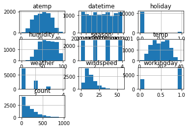
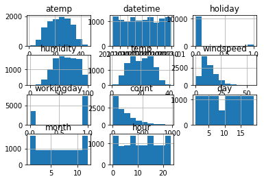
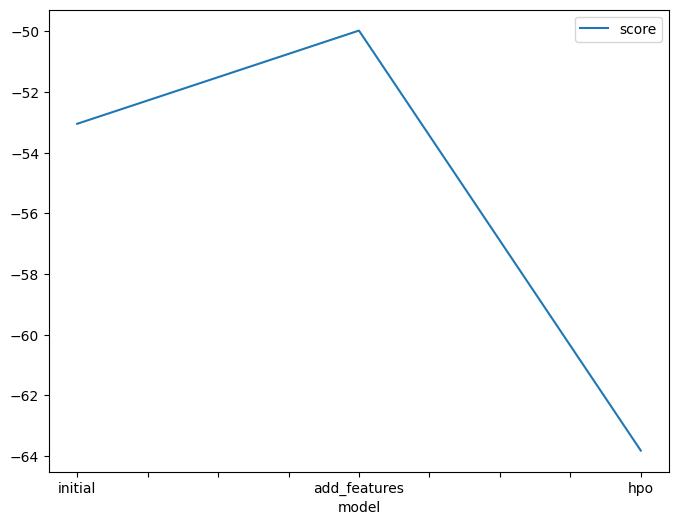
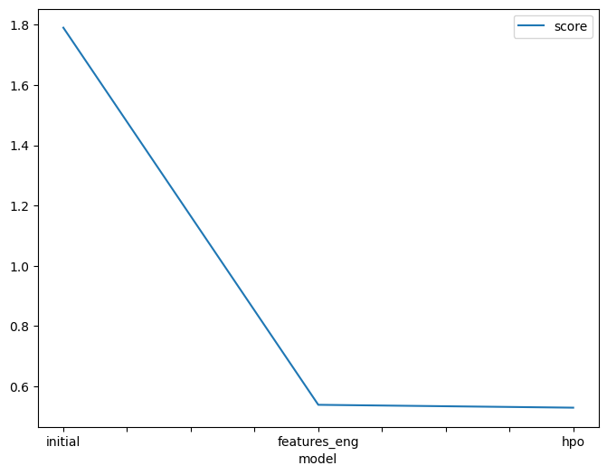

This notebook is a template with each step that you need to complete for the project.
Please fill in your code where there are explicit ?
markers in the notebook. You are welcome to add more cells and code as
you see fit.
Once you have completed all the code implementations, please export your notebook as a HTML file so the reviews can view your code. Make sure you have all outputs correctly outputted.
File-> Export Notebook As... -> Export Notebook as HTML
There is a writeup to complete as well after all code implememtation is done. Please answer all questions and attach the necessary tables and charts. You can complete the writeup in either markdown or PDF.
Completing the code template and writeup template will cover all of the rubric points for this project.
The rubric contains "Stand Out Suggestions" for enhancing the project beyond the minimum requirements. The stand out suggestions are optional. If you decide to pursue the "stand out suggestions", you can include the code in this notebook and also discuss the results in the writeup file.
Below is example of steps to get the API username and key. Each student will have their own username and key.
ml.t3.medium instance (2
vCPU + 4 GiB)Python 3 (MXNet 1.8 Python 3.7 CPU Optimized)!pip install -U pip
!pip install -U setuptools wheel
!pip install -U "mxnet<2.0.0" bokeh==2.0.1
!pip install autogluon --no-cache-dir
# Without --no-cache-dir, smaller aws instances may have trouble installingLooking in indexes: https://pypi.org/simple, https://us-python.pkg.dev/colab-wheels/public/simple/
Requirement already satisfied: pip in /usr/local/lib/python3.8/dist-packages (22.0.4)
Collecting pip
Downloading pip-22.3.1-py3-none-any.whl (2.1 MB)
━━━━━━━━━━━━━━━━━━━━━━━━━━━━━━━━━━━━━━━━ 2.1/2.1 MB 21.3 MB/s eta 0:00:00
pting uninstall: pip
Found existing installation: pip 22.0.4
Uninstalling pip-22.0.4:
Successfully uninstalled pip-22.0.4
Successfully installed pip-22.3.1
Looking in indexes: https://pypi.org/simple, https://us-python.pkg.dev/colab-wheels/public/simple/
Requirement already satisfied: setuptools in /usr/local/lib/python3.8/dist-packages (57.4.0)
Collecting setuptools
Downloading setuptools-66.1.1-py3-none-any.whl (1.3 MB)
━━━━━━━━━━━━━━━━━━━━━━━━━━━━━━━━━━━━━━━━ 1.3/1.3 MB 14.5 MB/s eta 0:00:00
ent already satisfied: wheel in /usr/local/lib/python3.8/dist-packages (0.38.4)
Installing collected packages: setuptools
Attempting uninstall: setuptools
Found existing installation: setuptools 57.4.0
Uninstalling setuptools-57.4.0:
Successfully uninstalled setuptools-57.4.0
ERROR: pip's dependency resolver does not currently take into account all the packages that are installed. This behaviour is the source of the following dependency conflicts.
ipython 7.9.0 requires jedi>=0.10, which is not installed.
cvxpy 1.2.3 requires setuptools<=64.0.2, but you have setuptools 66.1.1 which is incompatible.
Successfully installed setuptools-66.1.1
WARNING: Running pip as the 'root' user can result in broken permissions and conflicting behaviour with the system package manager. It is recommended to use a virtual environment instead: https://pip.pypa.io/warnings/venv
Looking in indexes: https://pypi.org/simple, https://us-python.pkg.dev/colab-wheels/public/simple/
Collecting mxnet<2.0.0
Downloading mxnet-1.9.1-py3-none-manylinux2014_x86_64.whl (49.1 MB)
━━━━━━━━━━━━━━━━━━━━━━━━━━━━━━━━━━━━━━━━ 49.1/49.1 MB 17.2 MB/s eta 0:00:00
━━━━━━━━━━━━━━━━━━━━━━━━━━━━━━━━━━━━━━━━ 8.6/8.6 MB 97.0 MB/s eta 0:00:00
etadata (setup.py) ... ent already satisfied: PyYAML>=3.10 in /usr/local/lib/python3.8/dist-packages (from bokeh==2.0.1) (6.0)
Requirement already satisfied: python-dateutil>=2.1 in /usr/local/lib/python3.8/dist-packages (from bokeh==2.0.1) (2.8.2)
Requirement already satisfied: Jinja2>=2.7 in /usr/local/lib/python3.8/dist-packages (from bokeh==2.0.1) (2.11.3)
Requirement already satisfied: numpy>=1.11.3 in /usr/local/lib/python3.8/dist-packages (from bokeh==2.0.1) (1.21.6)
Requirement already satisfied: pillow>=4.0 in /usr/local/lib/python3.8/dist-packages (from bokeh==2.0.1) (7.1.2)
Requirement already satisfied: packaging>=16.8 in /usr/local/lib/python3.8/dist-packages (from bokeh==2.0.1) (21.3)
Requirement already satisfied: tornado>=5 in /usr/local/lib/python3.8/dist-packages (from bokeh==2.0.1) (6.0.4)
Requirement already satisfied: typing_extensions>=3.7.4 in /usr/local/lib/python3.8/dist-packages (from bokeh==2.0.1) (4.4.0)
Collecting graphviz<0.9.0,>=0.8.1
Downloading graphviz-0.8.4-py2.py3-none-any.whl (16 kB)
Requirement already satisfied: requests<3,>=2.20.0 in /usr/local/lib/python3.8/dist-packages (from mxnet<2.0.0) (2.25.1)
Requirement already satisfied: MarkupSafe>=0.23 in /usr/local/lib/python3.8/dist-packages (from Jinja2>=2.7->bokeh==2.0.1) (2.0.1)
Requirement already satisfied: pyparsing!=3.0.5,>=2.0.2 in /usr/local/lib/python3.8/dist-packages (from packaging>=16.8->bokeh==2.0.1) (3.0.9)
Requirement already satisfied: six>=1.5 in /usr/local/lib/python3.8/dist-packages (from python-dateutil>=2.1->bokeh==2.0.1) (1.15.0)
Requirement already satisfied: urllib3<1.27,>=1.21.1 in /usr/local/lib/python3.8/dist-packages (from requests<3,>=2.20.0->mxnet<2.0.0) (1.24.3)
Requirement already satisfied: idna<3,>=2.5 in /usr/local/lib/python3.8/dist-packages (from requests<3,>=2.20.0->mxnet<2.0.0) (2.10)
Requirement already satisfied: certifi>=2017.4.17 in /usr/local/lib/python3.8/dist-packages (from requests<3,>=2.20.0->mxnet<2.0.0) (2022.12.7)
Requirement already satisfied: chardet<5,>=3.0.2 in /usr/local/lib/python3.8/dist-packages (from requests<3,>=2.20.0->mxnet<2.0.0) (4.0.0)
Building wheels for collected packages: bokeh
Building wheel for bokeh (setup.py) ... e=bokeh-2.0.1-py3-none-any.whl size=9080017 sha256=761d3fe2f04b8c95b0db35d209d5e653af8dff6d53836cc4fda555d0ce03ea55
Stored in directory: /root/.cache/pip/wheels/df/5e/9c/8bd156f0e272ecafaf8084bf6bd69ccb317e6fe6105edba7b2
Successfully built bokeh
Installing collected packages: graphviz, mxnet, bokeh
Attempting uninstall: graphviz
Found existing installation: graphviz 0.10.1
Uninstalling graphviz-0.10.1:
Successfully uninstalled graphviz-0.10.1
Attempting uninstall: bokeh
Found existing installation: bokeh 2.3.3
Uninstalling bokeh-2.3.3:
Successfully uninstalled bokeh-2.3.3
ERROR: pip's dependency resolver does not currently take into account all the packages that are installed. This behaviour is the source of the following dependency conflicts.
panel 0.12.1 requires bokeh<2.4.0,>=2.3.0, but you have bokeh 2.0.1 which is incompatible.
Successfully installed bokeh-2.0.1 graphviz-0.8.4 mxnet-1.9.1
WARNING: Running pip as the 'root' user can result in broken permissions and conflicting behaviour with the system package manager. It is recommended to use a virtual environment instead: https://pip.pypa.io/warnings/venv
Looking in indexes: https://pypi.org/simple, https://us-python.pkg.dev/colab-wheels/public/simple/
Collecting autogluon
Downloading autogluon-0.6.2-py3-none-any.whl (9.8 kB)
Collecting autogluon.vision==0.6.2
Downloading autogluon.vision-0.6.2-py3-none-any.whl (49 kB)
━━━━━━━━━━━━━━━━━━━━━━━━━━━━━━━━━━━━━━━━ 49.8/49.8 kB 5.8 MB/s eta 0:00:00
ultimodal==0.6.2
Downloading autogluon.multimodal-0.6.2-py3-none-any.whl (303 kB)
━━━━━━━━━━━━━━━━━━━━━━━━━━━━━━━━━━━━━━ 303.4/303.4 kB 15.9 MB/s eta 0:00:00
━━━━━━━━━━━━━━━━━━━━━━━━━━━━━━━━━━━━━ 292.5/292.5 kB 280.4 MB/s eta 0:00:00
━━━━━━━━━━━━━━━━━━━━━━━━━━━━━━━━━━━━━━━ 60.0/60.0 kB 186.4 MB/s eta 0:00:00
━━━━━━━━━━━━━━━━━━━━━━━━━━━━━━━━━━━━━ 226.5/226.5 kB 292.2 MB/s eta 0:00:00
eseries[all]==0.6.2
Downloading autogluon.timeseries-0.6.2-py3-none-any.whl (103 kB)
━━━━━━━━━━━━━━━━━━━━━━━━━━━━━━━━━━━━━ 103.6/103.6 kB 239.7 MB/s eta 0:00:00
━━━━━━━━━━━━━━━━━━━━━━━━━━━━━━━━━━━━━━━ 62.1/62.1 kB 192.9 MB/s eta 0:00:00
━━━━━━━━━━━━━━━━━━━━━━━━━━━━━━━━━━━━━ 802.2/802.2 kB 113.1 MB/s eta 0:00:00
anylinux_2_12_x86_64.manylinux2010_x86_64.manylinux_2_17_x86_64.manylinux2014_x86_64.whl (280 kB)
━━━━━━━━━━━━━━━━━━━━━━━━━━━━━━━━━━━━━ 280.2/280.2 kB 281.3 MB/s eta 0:00:00
ent already satisfied: requests in /usr/local/lib/python3.8/dist-packages (from autogluon.core[all]==0.6.2->autogluon) (2.25.1)
Requirement already satisfied: numpy<1.24,>=1.21 in /usr/local/lib/python3.8/dist-packages (from autogluon.core[all]==0.6.2->autogluon) (1.21.6)
Requirement already satisfied: tqdm>=4.38.0 in /usr/local/lib/python3.8/dist-packages (from autogluon.core[all]==0.6.2->autogluon) (4.64.1)
Requirement already satisfied: matplotlib in /usr/local/lib/python3.8/dist-packages (from autogluon.core[all]==0.6.2->autogluon) (3.2.2)
Requirement already satisfied: pandas!=1.4.0,<1.6,>=1.2.5 in /usr/local/lib/python3.8/dist-packages (from autogluon.core[all]==0.6.2->autogluon) (1.3.5)
Collecting dask<=2021.11.2,>=2021.09.1
Downloading dask-2021.11.2-py3-none-any.whl (1.0 MB)
━━━━━━━━━━━━━━━━━━━━━━━━━━━━━━━━━━━━━━━━ 1.0/1.0 MB 260.4 MB/s eta 0:00:00
ent already satisfied: scikit-learn<1.2,>=1.0.0 in /usr/local/lib/python3.8/dist-packages (from autogluon.core[all]==0.6.2->autogluon) (1.0.2)
Collecting networkx<3.0,>=2.3
Downloading networkx-2.8.8-py3-none-any.whl (2.0 MB)
━━━━━━━━━━━━━━━━━━━━━━━━━━━━━━━━━━━━━━━━ 2.0/2.0 MB 293.5 MB/s eta 0:00:00
mon==0.6.2
Downloading autogluon.common-0.6.2-py3-none-any.whl (44 kB)
━━━━━━━━━━━━━━━━━━━━━━━━━━━━━━━━━━━━━━━ 44.7/44.7 kB 169.5 MB/s eta 0:00:00
ent already satisfied: scipy<1.10.0,>=1.5.4 in /usr/local/lib/python3.8/dist-packages (from autogluon.core[all]==0.6.2->autogluon) (1.7.3)
Collecting boto3
Downloading boto3-1.26.54-py3-none-any.whl (132 kB)
━━━━━━━━━━━━━━━━━━━━━━━━━━━━━━━━━━━━━ 132.7/132.7 kB 263.3 MB/s eta 0:00:00
anylinux2014_x86_64.whl (60.2 MB)
━━━━━━━━━━━━━━━━━━━━━━━━━━━━━━━━━━━━━━━ 60.2/60.2 MB 193.5 MB/s eta 0:00:00
━━━━━━━━━━━━━━━━━━━━━━━━━━━━━━━━━━━━━━━━ 1.6/1.6 MB 305.2 MB/s eta 0:00:00
anylinux1_x86_64.whl (19.1 MB)
━━━━━━━━━━━━━━━━━━━━━━━━━━━━━━━━━━━━━━━ 19.1/19.1 MB 186.2 MB/s eta 0:00:00
ent already satisfied: nltk<4.0.0,>=3.4.5 in /usr/local/lib/python3.8/dist-packages (from autogluon.multimodal==0.6.2->autogluon) (3.7)
Collecting timm<0.7.0
Downloading timm-0.6.12-py3-none-any.whl (549 kB)
━━━━━━━━━━━━━━━━━━━━━━━━━━━━━━━━━━━━━ 549.1/549.1 kB 312.8 MB/s eta 0:00:00
ent already satisfied: defusedxml<=0.7.1,>=0.7.1 in /usr/local/lib/python3.8/dist-packages (from autogluon.multimodal==0.6.2->autogluon) (0.7.1)
Collecting scikit-image<0.20.0,>=0.19.1
Downloading scikit_image-0.19.3-cp38-cp38-manylinux_2_17_x86_64.manylinux2014_x86_64.whl (14.0 MB)
━━━━━━━━━━━━━━━━━━━━━━━━━━━━━━━━━━━━━━━ 14.0/14.0 MB 213.9 MB/s eta 0:00:00
━━━━━━━━━━━━━━━━━━━━━━━━━━━━━━━━━━━━━ 410.8/410.8 kB 299.0 MB/s eta 0:00:00
━━━━━━━━━━━━━━━━━━━━━━━━━━━━━━━━━━━━━ 248.2/248.2 kB 284.6 MB/s eta 0:00:00
ents to build wheel ... etadata (pyproject.toml) ... ━━━━━━━━━━━━━━━━━━━━━━━━━━━━━━━━━━━━━ 708.1/708.1 kB 309.7 MB/s eta 0:00:00
━━━━━━━━━━━━━━━━━━━━━━━━━━━━━━━━━━━━━━━ 43.6/43.6 kB 162.0 MB/s eta 0:00:00
etadata (setup.py) ... anylinux_2_28_x86_64.whl (3.4 MB)
━━━━━━━━━━━━━━━━━━━━━━━━━━━━━━━━━━━━━━━━ 3.4/3.4 MB 259.6 MB/s eta 0:00:00
ers<4.24.0,>=4.23.0
Downloading transformers-4.23.1-py3-none-any.whl (5.3 MB)
━━━━━━━━━━━━━━━━━━━━━━━━━━━━━━━━━━━━━━━━ 5.3/5.3 MB 222.7 MB/s eta 0:00:00
im<=0.2.1,>0.1.5
Downloading openmim-0.2.1-py2.py3-none-any.whl (49 kB)
━━━━━━━━━━━━━━━━━━━━━━━━━━━━━━━━━━━━━━━ 49.7/49.7 kB 190.7 MB/s eta 0:00:00
anylinux1_x86_64.whl (776.3 MB)
━━━━━━━━━━━━━━━━━━━━━━━━━━━━━━━━━━━━━ 776.3/776.3 MB 151.0 MB/s eta 0:00:00
ent already satisfied: jsonschema<=4.8.0 in /usr/local/lib/python3.8/dist-packages (from autogluon.multimodal==0.6.2->autogluon) (4.3.3)
Collecting evaluate<=0.3.0
Downloading evaluate-0.3.0-py3-none-any.whl (72 kB)
━━━━━━━━━━━━━━━━━━━━━━━━━━━━━━━━━━━━━━━ 72.9/72.9 kB 199.1 MB/s eta 0:00:00
anylinux_2_17_x86_64.manylinux2014_x86_64.whl (1.3 MB)
━━━━━━━━━━━━━━━━━━━━━━━━━━━━━━━━━━━━━━━━ 1.3/1.3 MB 205.2 MB/s eta 0:00:00
egaconf<2.2.0,>=2.1.1
Downloading omegaconf-2.1.2-py3-none-any.whl (74 kB)
━━━━━━━━━━━━━━━━━━━━━━━━━━━━━━━━━━━━━━━ 74.7/74.7 kB 204.4 MB/s eta 0:00:00
entations<=1.2.0,>=1.1.0
Downloading albumentations-1.2.0-py3-none-any.whl (113 kB)
━━━━━━━━━━━━━━━━━━━━━━━━━━━━━━━━━━━━━ 113.5/113.5 kB 220.3 MB/s eta 0:00:00
ent already satisfied: text-unidecode<=1.3 in /usr/local/lib/python3.8/dist-packages (from autogluon.multimodal==0.6.2->autogluon) (1.3)
Collecting nptyping<1.5.0,>=1.4.4
Downloading nptyping-1.4.4-py3-none-any.whl (31 kB)
Collecting torchtext<0.14.0
Downloading torchtext-0.13.1-cp38-cp38-manylinux1_x86_64.whl (1.9 MB)
━━━━━━━━━━━━━━━━━━━━━━━━━━━━━━━━━━━━━━━━ 1.9/1.9 MB 295.0 MB/s eta 0:00:00
etric-learning<1.4.0,>=1.3.0
Downloading pytorch_metric_learning-1.3.2-py3-none-any.whl (109 kB)
━━━━━━━━━━━━━━━━━━━━━━━━━━━━━━━━━━━━━ 109.4/109.4 kB 244.5 MB/s eta 0:00:00
━━━━━━━━━━━━━━━━━━━━━━━━━━━━━━━━━━━━━ 148.8/148.8 kB 270.6 MB/s eta 0:00:00
art-open<5.3.0,>=5.2.1
Downloading smart_open-5.2.1-py3-none-any.whl (58 kB)
━━━━━━━━━━━━━━━━━━━━━━━━━━━━━━━━━━━━━━━ 58.6/58.6 kB 167.1 MB/s eta 0:00:00
etrics<0.9.0,>=0.8.0
Downloading torchmetrics-0.8.2-py3-none-any.whl (409 kB)
━━━━━━━━━━━━━━━━━━━━━━━━━━━━━━━━━━━━━ 409.8/409.8 kB 290.5 MB/s eta 0:00:00
ent already satisfied: fastai<2.8,>=2.3.1 in /usr/local/lib/python3.8/dist-packages (from autogluon.tabular[all]==0.6.2->autogluon) (2.7.10)
Collecting lightgbm<3.4,>=3.3
Downloading lightgbm-3.3.4-py3-none-manylinux1_x86_64.whl (2.0 MB)
━━━━━━━━━━━━━━━━━━━━━━━━━━━━━━━━━━━━━━━━ 2.0/2.0 MB 317.3 MB/s eta 0:00:00
anylinux1_x86_64.whl (76.6 MB)
━━━━━━━━━━━━━━━━━━━━━━━━━━━━━━━━━━━━━━━ 76.6/76.6 MB 222.8 MB/s eta 0:00:00
anylinux2014_x86_64.whl (193.6 MB)
━━━━━━━━━━━━━━━━━━━━━━━━━━━━━━━━━━━━━ 193.6/193.6 MB 171.0 MB/s eta 0:00:00
━━━━━━━━━━━━━━━━━━━━━━━━━━━━━━━━━━━━━━━━ 1.1/1.1 MB 281.3 MB/s eta 0:00:00
odels~=0.13.0
Downloading statsmodels-0.13.5-cp38-cp38-manylinux_2_17_x86_64.manylinux2014_x86_64.whl (9.9 MB)
━━━━━━━━━━━━━━━━━━━━━━━━━━━━━━━━━━━━━━━━ 9.9/9.9 MB 230.6 MB/s eta 0:00:00
ent already satisfied: joblib~=1.1 in /usr/local/lib/python3.8/dist-packages (from autogluon.timeseries[all]==0.6.2->autogluon) (1.2.0)
Collecting tbats~=1.1
Downloading tbats-1.1.2-py3-none-any.whl (43 kB)
━━━━━━━━━━━━━━━━━━━━━━━━━━━━━━━━━━━━━━━ 43.8/43.8 kB 163.5 MB/s eta 0:00:00
darima~=1.8.2
Downloading pmdarima-1.8.5-cp38-cp38-manylinux_2_17_x86_64.manylinux2014_x86_64.manylinux_2_24_x86_64.whl (1.5 MB)
━━━━━━━━━━━━━━━━━━━━━━━━━━━━━━━━━━━━━━━━ 1.5/1.5 MB 325.8 MB/s eta 0:00:00
e<0.14,>=0.13.1
Downloading sktime-0.13.4-py3-none-any.whl (7.0 MB)
━━━━━━━━━━━━━━━━━━━━━━━━━━━━━━━━━━━━━━━━ 7.0/7.0 MB 120.8 MB/s eta 0:00:00
━━━━━━━━━━━━━━━━━━━━━━━━━━━━━━━━━━━━━━━━ 1.3/1.3 MB 240.8 MB/s eta 0:00:00
ent already satisfied: setuptools in /usr/local/lib/python3.8/dist-packages (from autogluon.common==0.6.2->autogluon.core[all]==0.6.2->autogluon) (66.1.1)
Requirement already satisfied: packaging>=20.0 in /usr/local/lib/python3.8/dist-packages (from accelerate<0.14,>=0.9->autogluon.multimodal==0.6.2->autogluon) (21.3)
Requirement already satisfied: pyyaml in /usr/local/lib/python3.8/dist-packages (from accelerate<0.14,>=0.9->autogluon.multimodal==0.6.2->autogluon) (6.0)
Collecting albumentations<=1.2.0,>=1.1.0
Downloading albumentations-1.1.0-py3-none-any.whl (102 kB)
━━━━━━━━━━━━━━━━━━━━━━━━━━━━━━━━━━━━━ 102.4/102.4 kB 239.1 MB/s eta 0:00:00
ent already satisfied: qudida>=0.0.4 in /usr/local/lib/python3.8/dist-packages (from albumentations<=1.2.0,>=1.1.0->autogluon.multimodal==0.6.2->autogluon) (0.0.4)
Requirement already satisfied: opencv-python-headless>=4.1.1 in /usr/local/lib/python3.8/dist-packages (from albumentations<=1.2.0,>=1.1.0->autogluon.multimodal==0.6.2->autogluon) (4.7.0.68)
Requirement already satisfied: graphviz in /usr/local/lib/python3.8/dist-packages (from catboost<1.2,>=1.0->autogluon.tabular[all]==0.6.2->autogluon) (0.8.4)
Requirement already satisfied: plotly in /usr/local/lib/python3.8/dist-packages (from catboost<1.2,>=1.0->autogluon.tabular[all]==0.6.2->autogluon) (5.5.0)
Requirement already satisfied: six in /usr/local/lib/python3.8/dist-packages (from catboost<1.2,>=1.0->autogluon.tabular[all]==0.6.2->autogluon) (1.15.0)
Requirement already satisfied: partd>=0.3.10 in /usr/local/lib/python3.8/dist-packages (from dask<=2021.11.2,>=2021.09.1->autogluon.core[all]==0.6.2->autogluon) (1.3.0)
Requirement already satisfied: cloudpickle>=1.1.1 in /usr/local/lib/python3.8/dist-packages (from dask<=2021.11.2,>=2021.09.1->autogluon.core[all]==0.6.2->autogluon) (2.2.0)
Requirement already satisfied: fsspec>=0.6.0 in /usr/local/lib/python3.8/dist-packages (from dask<=2021.11.2,>=2021.09.1->autogluon.core[all]==0.6.2->autogluon) (2022.11.0)
Requirement already satisfied: toolz>=0.8.2 in /usr/local/lib/python3.8/dist-packages (from dask<=2021.11.2,>=2021.09.1->autogluon.core[all]==0.6.2->autogluon) (0.12.0)
Requirement already satisfied: tblib>=1.6.0 in /usr/local/lib/python3.8/dist-packages (from distributed<=2021.11.2,>=2021.09.1->autogluon.core[all]==0.6.2->autogluon) (1.7.0)
Requirement already satisfied: tornado>=6.0.3 in /usr/local/lib/python3.8/dist-packages (from distributed<=2021.11.2,>=2021.09.1->autogluon.core[all]==0.6.2->autogluon) (6.0.4)
Requirement already satisfied: msgpack>=0.6.0 in /usr/local/lib/python3.8/dist-packages (from distributed<=2021.11.2,>=2021.09.1->autogluon.core[all]==0.6.2->autogluon) (1.0.4)
Requirement already satisfied: sortedcontainers!=2.0.0,!=2.0.1 in /usr/local/lib/python3.8/dist-packages (from distributed<=2021.11.2,>=2021.09.1->autogluon.core[all]==0.6.2->autogluon) (2.4.0)
Requirement already satisfied: click>=6.6 in /usr/local/lib/python3.8/dist-packages (from distributed<=2021.11.2,>=2021.09.1->autogluon.core[all]==0.6.2->autogluon) (7.1.2)
Requirement already satisfied: jinja2 in /usr/local/lib/python3.8/dist-packages (from distributed<=2021.11.2,>=2021.09.1->autogluon.core[all]==0.6.2->autogluon) (2.11.3)
Requirement already satisfied: zict>=0.1.3 in /usr/local/lib/python3.8/dist-packages (from distributed<=2021.11.2,>=2021.09.1->autogluon.core[all]==0.6.2->autogluon) (2.2.0)
Collecting responses<0.19
Downloading responses-0.18.0-py3-none-any.whl (38 kB)
Collecting huggingface-hub>=0.7.0
Downloading huggingface_hub-0.11.1-py3-none-any.whl (182 kB)
━━━━━━━━━━━━━━━━━━━━━━━━━━━━━━━━━━━━━ 182.4/182.4 kB 260.0 MB/s eta 0:00:00
ultiprocess
Downloading multiprocess-0.70.14-py38-none-any.whl (132 kB)
━━━━━━━━━━━━━━━━━━━━━━━━━━━━━━━━━━━━━ 132.0/132.0 kB 254.2 MB/s eta 0:00:00
━━━━━━━━━━━━━━━━━━━━━━━━━━━━━━━━━━━━━ 452.9/452.9 kB 302.9 MB/s eta 0:00:00
anylinux_2_17_x86_64.manylinux2014_x86_64.whl (213 kB)
━━━━━━━━━━━━━━━━━━━━━━━━━━━━━━━━━━━━━ 213.0/213.0 kB 258.2 MB/s eta 0:00:00
ent already satisfied: dill in /usr/local/lib/python3.8/dist-packages (from evaluate<=0.3.0->autogluon.multimodal==0.6.2->autogluon) (0.3.6)
Requirement already satisfied: spacy<4 in /usr/local/lib/python3.8/dist-packages (from fastai<2.8,>=2.3.1->autogluon.tabular[all]==0.6.2->autogluon) (3.4.4)
Requirement already satisfied: fastprogress>=0.2.4 in /usr/local/lib/python3.8/dist-packages (from fastai<2.8,>=2.3.1->autogluon.tabular[all]==0.6.2->autogluon) (1.0.3)
Requirement already satisfied: pip in /usr/local/lib/python3.8/dist-packages (from fastai<2.8,>=2.3.1->autogluon.tabular[all]==0.6.2->autogluon) (22.3.1)
Requirement already satisfied: fastdownload<2,>=0.0.5 in /usr/local/lib/python3.8/dist-packages (from fastai<2.8,>=2.3.1->autogluon.tabular[all]==0.6.2->autogluon) (0.0.7)
Requirement already satisfied: fastcore<1.6,>=1.4.5 in /usr/local/lib/python3.8/dist-packages (from fastai<2.8,>=2.3.1->autogluon.tabular[all]==0.6.2->autogluon) (1.5.27)
Collecting yacs
Downloading yacs-0.1.8-py3-none-any.whl (14 kB)
Collecting portalocker
Downloading portalocker-2.7.0-py2.py3-none-any.whl (15 kB)
Requirement already satisfied: opencv-python in /usr/local/lib/python3.8/dist-packages (from gluoncv<0.10.6,>=0.10.5->autogluon.vision==0.6.2->autogluon) (4.6.0.66)
Collecting autocfg
Downloading autocfg-0.0.8-py3-none-any.whl (13 kB)
Requirement already satisfied: typing-extensions~=4.0 in /usr/local/lib/python3.8/dist-packages (from gluonts~=0.11.0->autogluon.timeseries[all]==0.6.2->autogluon) (4.4.0)
Requirement already satisfied: pydantic~=1.7 in /usr/local/lib/python3.8/dist-packages (from gluonts~=0.11.0->autogluon.timeseries[all]==0.6.2->autogluon) (1.10.4)
Requirement already satisfied: future in /usr/local/lib/python3.8/dist-packages (from hyperopt<0.2.8,>=0.2.7->autogluon.core[all]==0.6.2->autogluon) (0.16.0)
Collecting py4j
Downloading py4j-0.10.9.7-py2.py3-none-any.whl (200 kB)
━━━━━━━━━━━━━━━━━━━━━━━━━━━━━━━━━━━━━ 200.5/200.5 kB 243.2 MB/s eta 0:00:00
ent already satisfied: attrs>=17.4.0 in /usr/local/lib/python3.8/dist-packages (from jsonschema<=4.8.0->autogluon.multimodal==0.6.2->autogluon) (22.2.0)
Requirement already satisfied: importlib-resources>=1.4.0 in /usr/local/lib/python3.8/dist-packages (from jsonschema<=4.8.0->autogluon.multimodal==0.6.2->autogluon) (5.10.2)
Requirement already satisfied: pyrsistent!=0.17.0,!=0.17.1,!=0.17.2,>=0.14.0 in /usr/local/lib/python3.8/dist-packages (from jsonschema<=4.8.0->autogluon.multimodal==0.6.2->autogluon) (0.19.3)
Requirement already satisfied: wheel in /usr/local/lib/python3.8/dist-packages (from lightgbm<3.4,>=3.3->autogluon.tabular[all]==0.6.2->autogluon) (0.38.4)
Requirement already satisfied: regex>=2021.8.3 in /usr/local/lib/python3.8/dist-packages (from nltk<4.0.0,>=3.4.5->autogluon.multimodal==0.6.2->autogluon) (2022.6.2)
Collecting typish>=1.7.0
Downloading typish-1.9.3-py3-none-any.whl (45 kB)
━━━━━━━━━━━━━━━━━━━━━━━━━━━━━━━━━━━━━━━ 45.1/45.1 kB 183.1 MB/s eta 0:00:00
e==4.8
Downloading antlr4-python3-runtime-4.8.tar.gz (112 kB)
━━━━━━━━━━━━━━━━━━━━━━━━━━━━━━━━━━━━━ 112.4/112.4 kB 263.6 MB/s eta 0:00:00
etadata (setup.py) ... odel-index
Downloading model_index-0.1.11-py3-none-any.whl (34 kB)
Requirement already satisfied: tabulate in /usr/local/lib/python3.8/dist-packages (from openmim<=0.2.1,>0.1.5->autogluon.multimodal==0.6.2->autogluon) (0.8.10)
Collecting colorama
Downloading colorama-0.4.6-py2.py3-none-any.whl (25 kB)
Collecting rich
Downloading rich-13.2.0-py3-none-any.whl (238 kB)
━━━━━━━━━━━━━━━━━━━━━━━━━━━━━━━━━━━━━ 238.9/238.9 kB 292.6 MB/s eta 0:00:00
ent already satisfied: python-dateutil>=2.7.3 in /usr/local/lib/python3.8/dist-packages (from pandas!=1.4.0,<1.6,>=1.2.5->autogluon.core[all]==0.6.2->autogluon) (2.8.2)
Requirement already satisfied: pytz>=2017.3 in /usr/local/lib/python3.8/dist-packages (from pandas!=1.4.0,<1.6,>=1.2.5->autogluon.core[all]==0.6.2->autogluon) (2022.7)
Requirement already satisfied: urllib3 in /usr/local/lib/python3.8/dist-packages (from pmdarima~=1.8.2->autogluon.timeseries[all]==0.6.2->autogluon) (1.24.3)
Requirement already satisfied: Cython!=0.29.18,>=0.29 in /usr/local/lib/python3.8/dist-packages (from pmdarima~=1.8.2->autogluon.timeseries[all]==0.6.2->autogluon) (0.29.33)
Requirement already satisfied: tensorboard>=2.9.1 in /usr/local/lib/python3.8/dist-packages (from pytorch-lightning<1.8.0,>=1.7.4->autogluon.multimodal==0.6.2->autogluon) (2.9.1)
Collecting pyDeprecate>=0.3.1
Downloading pyDeprecate-0.3.2-py3-none-any.whl (10 kB)
Requirement already satisfied: filelock in /usr/local/lib/python3.8/dist-packages (from ray<2.1,>=2.0->autogluon.core[all]==0.6.2->autogluon) (3.9.0)
Collecting grpcio<=1.43.0,>=1.32.0
Downloading grpcio-1.43.0-cp38-cp38-manylinux_2_17_x86_64.manylinux2014_x86_64.whl (4.1 MB)
━━━━━━━━━━━━━━━━━━━━━━━━━━━━━━━━━━━━━━━━ 4.1/4.1 MB 224.3 MB/s eta 0:00:00
ent already satisfied: aiosignal in /usr/local/lib/python3.8/dist-packages (from ray<2.1,>=2.0->autogluon.core[all]==0.6.2->autogluon) (1.3.1)
Collecting virtualenv
Downloading virtualenv-20.17.1-py3-none-any.whl (8.8 MB)
━━━━━━━━━━━━━━━━━━━━━━━━━━━━━━━━━━━━━━━━ 8.8/8.8 MB 220.5 MB/s eta 0:00:00
ent already satisfied: frozenlist in /usr/local/lib/python3.8/dist-packages (from ray<2.1,>=2.0->autogluon.core[all]==0.6.2->autogluon) (1.3.3)
Requirement already satisfied: protobuf<4.0.0,>=3.15.3 in /usr/local/lib/python3.8/dist-packages (from ray<2.1,>=2.0->autogluon.core[all]==0.6.2->autogluon) (3.19.6)
Collecting tensorboardX>=1.9
Downloading tensorboardX-2.5.1-py2.py3-none-any.whl (125 kB)
━━━━━━━━━━━━━━━━━━━━━━━━━━━━━━━━━━━━━ 125.4/125.4 kB 242.6 MB/s eta 0:00:00
ent already satisfied: chardet<5,>=3.0.2 in /usr/local/lib/python3.8/dist-packages (from requests->autogluon.core[all]==0.6.2->autogluon) (4.0.0)
Requirement already satisfied: certifi>=2017.4.17 in /usr/local/lib/python3.8/dist-packages (from requests->autogluon.core[all]==0.6.2->autogluon) (2022.12.7)
Requirement already satisfied: idna<3,>=2.5 in /usr/local/lib/python3.8/dist-packages (from requests->autogluon.core[all]==0.6.2->autogluon) (2.10)
Requirement already satisfied: PyWavelets>=1.1.1 in /usr/local/lib/python3.8/dist-packages (from scikit-image<0.20.0,>=0.19.1->autogluon.multimodal==0.6.2->autogluon) (1.4.1)
Requirement already satisfied: imageio>=2.4.1 in /usr/local/lib/python3.8/dist-packages (from scikit-image<0.20.0,>=0.19.1->autogluon.multimodal==0.6.2->autogluon) (2.9.0)
Requirement already satisfied: tifffile>=2019.7.26 in /usr/local/lib/python3.8/dist-packages (from scikit-image<0.20.0,>=0.19.1->autogluon.multimodal==0.6.2->autogluon) (2022.10.10)
Requirement already satisfied: threadpoolctl>=2.0.0 in /usr/local/lib/python3.8/dist-packages (from scikit-learn<1.2,>=1.0.0->autogluon.core[all]==0.6.2->autogluon) (3.1.0)
Requirement already satisfied: numba>=0.53 in /usr/local/lib/python3.8/dist-packages (from sktime<0.14,>=0.13.1->autogluon.timeseries[all]==0.6.2->autogluon) (0.56.4)
Collecting deprecated>=1.2.13
Downloading Deprecated-1.2.13-py2.py3-none-any.whl (9.6 kB)
Requirement already satisfied: patsy>=0.5.2 in /usr/local/lib/python3.8/dist-packages (from statsmodels~=0.13.0->autogluon.timeseries[all]==0.6.2->autogluon) (0.5.3)
Collecting tokenizers!=0.11.3,<0.14,>=0.11.1
Downloading tokenizers-0.13.2-cp38-cp38-manylinux_2_17_x86_64.manylinux2014_x86_64.whl (7.6 MB)
━━━━━━━━━━━━━━━━━━━━━━━━━━━━━━━━━━━━━━━━ 7.6/7.6 MB 135.5 MB/s eta 0:00:00
espath<2.0.0,>=0.7.1
Downloading jmespath-1.0.1-py3-none-any.whl (20 kB)
Collecting s3transfer<0.7.0,>=0.6.0
Downloading s3transfer-0.6.0-py3-none-any.whl (79 kB)
━━━━━━━━━━━━━━━━━━━━━━━━━━━━━━━━━━━━━━━ 79.6/79.6 kB 231.4 MB/s eta 0:00:00
━━━━━━━━━━━━━━━━━━━━━━━━━━━━━━━━━━━━━━━ 10.3/10.3 MB 164.9 MB/s eta 0:00:00
ent already satisfied: kiwisolver>=1.0.1 in /usr/local/lib/python3.8/dist-packages (from matplotlib->autogluon.core[all]==0.6.2->autogluon) (1.4.4)
Requirement already satisfied: cycler>=0.10 in /usr/local/lib/python3.8/dist-packages (from matplotlib->autogluon.core[all]==0.6.2->autogluon) (0.11.0)
Requirement already satisfied: pyparsing!=2.0.4,!=2.1.2,!=2.1.6,>=2.0.1 in /usr/local/lib/python3.8/dist-packages (from matplotlib->autogluon.core[all]==0.6.2->autogluon) (3.0.9)
Collecting urllib3
Downloading urllib3-1.26.14-py2.py3-none-any.whl (140 kB)
━━━━━━━━━━━━━━━━━━━━━━━━━━━━━━━━━━━━━ 140.6/140.6 kB 268.9 MB/s eta 0:00:00
ent already satisfied: aiohttp in /usr/local/lib/python3.8/dist-packages (from datasets>=2.0.0->evaluate<=0.3.0->autogluon.multimodal==0.6.2->autogluon) (3.8.3)
Requirement already satisfied: pyarrow>=6.0.0 in /usr/local/lib/python3.8/dist-packages (from datasets>=2.0.0->evaluate<=0.3.0->autogluon.multimodal==0.6.2->autogluon) (9.0.0)
Requirement already satisfied: wrapt<2,>=1.10 in /usr/local/lib/python3.8/dist-packages (from deprecated>=1.2.13->sktime<0.14,>=0.13.1->autogluon.timeseries[all]==0.6.2->autogluon) (1.14.1)
Requirement already satisfied: zipp>=3.1.0 in /usr/local/lib/python3.8/dist-packages (from importlib-resources>=1.4.0->jsonschema<=4.8.0->autogluon.multimodal==0.6.2->autogluon) (3.11.0)
Requirement already satisfied: importlib-metadata in /usr/local/lib/python3.8/dist-packages (from numba>=0.53->sktime<0.14,>=0.13.1->autogluon.timeseries[all]==0.6.2->autogluon) (6.0.0)
Requirement already satisfied: llvmlite<0.40,>=0.39.0dev0 in /usr/local/lib/python3.8/dist-packages (from numba>=0.53->sktime<0.14,>=0.13.1->autogluon.timeseries[all]==0.6.2->autogluon) (0.39.1)
Requirement already satisfied: locket in /usr/local/lib/python3.8/dist-packages (from partd>=0.3.10->dask<=2021.11.2,>=2021.09.1->autogluon.core[all]==0.6.2->autogluon) (1.0.0)
Requirement already satisfied: catalogue<2.1.0,>=2.0.6 in /usr/local/lib/python3.8/dist-packages (from spacy<4->fastai<2.8,>=2.3.1->autogluon.tabular[all]==0.6.2->autogluon) (2.0.8)
Requirement already satisfied: spacy-legacy<3.1.0,>=3.0.10 in /usr/local/lib/python3.8/dist-packages (from spacy<4->fastai<2.8,>=2.3.1->autogluon.tabular[all]==0.6.2->autogluon) (3.0.11)
Requirement already satisfied: spacy-loggers<2.0.0,>=1.0.0 in /usr/local/lib/python3.8/dist-packages (from spacy<4->fastai<2.8,>=2.3.1->autogluon.tabular[all]==0.6.2->autogluon) (1.0.4)
Requirement already satisfied: preshed<3.1.0,>=3.0.2 in /usr/local/lib/python3.8/dist-packages (from spacy<4->fastai<2.8,>=2.3.1->autogluon.tabular[all]==0.6.2->autogluon) (3.0.8)
Requirement already satisfied: murmurhash<1.1.0,>=0.28.0 in /usr/local/lib/python3.8/dist-packages (from spacy<4->fastai<2.8,>=2.3.1->autogluon.tabular[all]==0.6.2->autogluon) (1.0.9)
Requirement already satisfied: langcodes<4.0.0,>=3.2.0 in /usr/local/lib/python3.8/dist-packages (from spacy<4->fastai<2.8,>=2.3.1->autogluon.tabular[all]==0.6.2->autogluon) (3.3.0)
Requirement already satisfied: wasabi<1.1.0,>=0.9.1 in /usr/local/lib/python3.8/dist-packages (from spacy<4->fastai<2.8,>=2.3.1->autogluon.tabular[all]==0.6.2->autogluon) (0.10.1)
Requirement already satisfied: srsly<3.0.0,>=2.4.3 in /usr/local/lib/python3.8/dist-packages (from spacy<4->fastai<2.8,>=2.3.1->autogluon.tabular[all]==0.6.2->autogluon) (2.4.5)
Requirement already satisfied: cymem<2.1.0,>=2.0.2 in /usr/local/lib/python3.8/dist-packages (from spacy<4->fastai<2.8,>=2.3.1->autogluon.tabular[all]==0.6.2->autogluon) (2.0.7)
Requirement already satisfied: typer<0.8.0,>=0.3.0 in /usr/local/lib/python3.8/dist-packages (from spacy<4->fastai<2.8,>=2.3.1->autogluon.tabular[all]==0.6.2->autogluon) (0.7.0)
Requirement already satisfied: thinc<8.2.0,>=8.1.0 in /usr/local/lib/python3.8/dist-packages (from spacy<4->fastai<2.8,>=2.3.1->autogluon.tabular[all]==0.6.2->autogluon) (8.1.6)
Requirement already satisfied: pathy>=0.3.5 in /usr/local/lib/python3.8/dist-packages (from spacy<4->fastai<2.8,>=2.3.1->autogluon.tabular[all]==0.6.2->autogluon) (0.10.1)
Requirement already satisfied: werkzeug>=1.0.1 in /usr/local/lib/python3.8/dist-packages (from tensorboard>=2.9.1->pytorch-lightning<1.8.0,>=1.7.4->autogluon.multimodal==0.6.2->autogluon) (1.0.1)
Requirement already satisfied: tensorboard-data-server<0.7.0,>=0.6.0 in /usr/local/lib/python3.8/dist-packages (from tensorboard>=2.9.1->pytorch-lightning<1.8.0,>=1.7.4->autogluon.multimodal==0.6.2->autogluon) (0.6.1)
Requirement already satisfied: markdown>=2.6.8 in /usr/local/lib/python3.8/dist-packages (from tensorboard>=2.9.1->pytorch-lightning<1.8.0,>=1.7.4->autogluon.multimodal==0.6.2->autogluon) (3.4.1)
Requirement already satisfied: google-auth<3,>=1.6.3 in /usr/local/lib/python3.8/dist-packages (from tensorboard>=2.9.1->pytorch-lightning<1.8.0,>=1.7.4->autogluon.multimodal==0.6.2->autogluon) (2.16.0)
Requirement already satisfied: google-auth-oauthlib<0.5,>=0.4.1 in /usr/local/lib/python3.8/dist-packages (from tensorboard>=2.9.1->pytorch-lightning<1.8.0,>=1.7.4->autogluon.multimodal==0.6.2->autogluon) (0.4.6)
Requirement already satisfied: tensorboard-plugin-wit>=1.6.0 in /usr/local/lib/python3.8/dist-packages (from tensorboard>=2.9.1->pytorch-lightning<1.8.0,>=1.7.4->autogluon.multimodal==0.6.2->autogluon) (1.8.1)
Requirement already satisfied: absl-py>=0.4 in /usr/local/lib/python3.8/dist-packages (from tensorboard>=2.9.1->pytorch-lightning<1.8.0,>=1.7.4->autogluon.multimodal==0.6.2->autogluon) (1.3.0)
Requirement already satisfied: heapdict in /usr/local/lib/python3.8/dist-packages (from zict>=0.1.3->distributed<=2021.11.2,>=2021.09.1->autogluon.core[all]==0.6.2->autogluon) (1.0.1)
Requirement already satisfied: MarkupSafe>=0.23 in /usr/local/lib/python3.8/dist-packages (from jinja2->distributed<=2021.11.2,>=2021.09.1->autogluon.core[all]==0.6.2->autogluon) (2.0.1)
Collecting ordered-set
Downloading ordered_set-4.1.0-py3-none-any.whl (7.6 kB)
Requirement already satisfied: tenacity>=6.2.0 in /usr/local/lib/python3.8/dist-packages (from plotly->catboost<1.2,>=1.0->autogluon.tabular[all]==0.6.2->autogluon) (8.1.0)
Requirement already satisfied: pygments<3.0.0,>=2.6.0 in /usr/local/lib/python3.8/dist-packages (from rich->openmim<=0.2.1,>0.1.5->autogluon.multimodal==0.6.2->autogluon) (2.6.1)
Collecting markdown-it-py<3.0.0,>=2.1.0
Downloading markdown_it_py-2.1.0-py3-none-any.whl (84 kB)
━━━━━━━━━━━━━━━━━━━━━━━━━━━━━━━━━━━━━━━ 84.5/84.5 kB 200.0 MB/s eta 0:00:00
━━━━━━━━━━━━━━━━━━━━━━━━━━━━━━━━━━━━━ 468.5/468.5 kB 231.1 MB/s eta 0:00:00
ent already satisfied: platformdirs<3,>=2.4 in /usr/local/lib/python3.8/dist-packages (from virtualenv->ray<2.1,>=2.0->autogluon.core[all]==0.6.2->autogluon) (2.6.2)
Requirement already satisfied: multidict<7.0,>=4.5 in /usr/local/lib/python3.8/dist-packages (from aiohttp->datasets>=2.0.0->evaluate<=0.3.0->autogluon.multimodal==0.6.2->autogluon) (6.0.4)
Requirement already satisfied: async-timeout<5.0,>=4.0.0a3 in /usr/local/lib/python3.8/dist-packages (from aiohttp->datasets>=2.0.0->evaluate<=0.3.0->autogluon.multimodal==0.6.2->autogluon) (4.0.2)
Requirement already satisfied: yarl<2.0,>=1.0 in /usr/local/lib/python3.8/dist-packages (from aiohttp->datasets>=2.0.0->evaluate<=0.3.0->autogluon.multimodal==0.6.2->autogluon) (1.8.2)
Requirement already satisfied: charset-normalizer<3.0,>=2.0 in /usr/local/lib/python3.8/dist-packages (from aiohttp->datasets>=2.0.0->evaluate<=0.3.0->autogluon.multimodal==0.6.2->autogluon) (2.1.1)
Requirement already satisfied: pyasn1-modules>=0.2.1 in /usr/local/lib/python3.8/dist-packages (from google-auth<3,>=1.6.3->tensorboard>=2.9.1->pytorch-lightning<1.8.0,>=1.7.4->autogluon.multimodal==0.6.2->autogluon) (0.2.8)
Requirement already satisfied: rsa<5,>=3.1.4 in /usr/local/lib/python3.8/dist-packages (from google-auth<3,>=1.6.3->tensorboard>=2.9.1->pytorch-lightning<1.8.0,>=1.7.4->autogluon.multimodal==0.6.2->autogluon) (4.9)
Requirement already satisfied: cachetools<6.0,>=2.0.0 in /usr/local/lib/python3.8/dist-packages (from google-auth<3,>=1.6.3->tensorboard>=2.9.1->pytorch-lightning<1.8.0,>=1.7.4->autogluon.multimodal==0.6.2->autogluon) (5.2.1)
Requirement already satisfied: requests-oauthlib>=0.7.0 in /usr/local/lib/python3.8/dist-packages (from google-auth-oauthlib<0.5,>=0.4.1->tensorboard>=2.9.1->pytorch-lightning<1.8.0,>=1.7.4->autogluon.multimodal==0.6.2->autogluon) (1.3.1)
Collecting mdurl~=0.1
Downloading mdurl-0.1.2-py3-none-any.whl (10.0 kB)
Requirement already satisfied: confection<1.0.0,>=0.0.1 in /usr/local/lib/python3.8/dist-packages (from thinc<8.2.0,>=8.1.0->spacy<4->fastai<2.8,>=2.3.1->autogluon.tabular[all]==0.6.2->autogluon) (0.0.3)
Requirement already satisfied: blis<0.8.0,>=0.7.8 in /usr/local/lib/python3.8/dist-packages (from thinc<8.2.0,>=8.1.0->spacy<4->fastai<2.8,>=2.3.1->autogluon.tabular[all]==0.6.2->autogluon) (0.7.9)
Requirement already satisfied: pyasn1<0.5.0,>=0.4.6 in /usr/local/lib/python3.8/dist-packages (from pyasn1-modules>=0.2.1->google-auth<3,>=1.6.3->tensorboard>=2.9.1->pytorch-lightning<1.8.0,>=1.7.4->autogluon.multimodal==0.6.2->autogluon) (0.4.8)
Requirement already satisfied: oauthlib>=3.0.0 in /usr/local/lib/python3.8/dist-packages (from requests-oauthlib>=0.7.0->google-auth-oauthlib<0.5,>=0.4.1->tensorboard>=2.9.1->pytorch-lightning<1.8.0,>=1.7.4->autogluon.multimodal==0.6.2->autogluon) (3.2.2)
Building wheels for collected packages: fairscale, antlr4-python3-runtime, seqeval
Building wheel for fairscale (pyproject.toml) ... e=fairscale-0.4.6-py3-none-any.whl size=307224 sha256=303ede2b5cffb633394e0cac0c920f6cdd6956c0dbbd3ea7b47d2307bb23fe3d
Stored in directory: /tmp/pip-ephem-wheel-cache-fjnbm5_n/wheels/60/e8/f1/4f2cc869823c35e834c6cee0552a0605c2bdc89f7da81f1a1d
Building wheel for antlr4-python3-runtime (setup.py) ... e: filename=antlr4_python3_runtime-4.8-py3-none-any.whl size=141211 sha256=214c094d21b3e4bed36081303ad90b190821aa044f4b4134e8ddcad24e4114ea
Stored in directory: /tmp/pip-ephem-wheel-cache-fjnbm5_n/wheels/34/d7/fe/a833ceccaee881c6f8cd49985ee4285bf94c5cf2c66ea5db68
Building wheel for seqeval (setup.py) ... e=seqeval-1.2.2-py3-none-any.whl size=16164 sha256=ee48c61bf811d5fe54fe3633d3d6bb0a7dd628163e1d472e3c132983ab78ccaa
Stored in directory: /tmp/pip-ephem-wheel-cache-fjnbm5_n/wheels/e3/30/9b/6b670dac34775f2b7cc4e9b172202e81fbb4f9cdb103c1ca66
Successfully built fairscale antlr4-python3-runtime seqeval
Installing collected packages: typish, tokenizers, sentencepiece, py4j, distlib, antlr4-python3-runtime, yacs, xxhash, virtualenv, urllib3, torch, tensorboardX, smart-open, pyDeprecate, psutil, portalocker, Pillow, ordered-set, omegaconf, nptyping, networkx, multiprocess, mdurl, jmespath, grpcio, deprecated, colorama, autocfg, xgboost, torchmetrics, markdown-it-py, hyperopt, fairscale, dask, botocore, accelerate, torchvision, torchtext, statsmodels, seqeval, scikit-image, s3transfer, rich, responses, ray, nlpaug, model-index, lightgbm, huggingface-hub, gluonts, gluoncv, distributed, catboost, transformers, timm, sktime, pytorch-metric-learning, pmdarima, openmim, datasets, boto3, albumentations, tbats, evaluate, autogluon.common, pytorch-lightning, autogluon.features, autogluon.core, autogluon.tabular, autogluon.multimodal, autogluon.vision, autogluon.timeseries, autogluon.text, autogluon
Attempting uninstall: urllib3
Found existing installation: urllib3 1.24.3
Uninstalling urllib3-1.24.3:
Successfully uninstalled urllib3-1.24.3
Attempting uninstall: torch
Found existing installation: torch 1.13.1+cu116
Uninstalling torch-1.13.1+cu116:
Successfully uninstalled torch-1.13.1+cu116
Attempting uninstall: smart-open
Found existing installation: smart-open 6.3.0
Uninstalling smart-open-6.3.0:
Successfully uninstalled smart-open-6.3.0
Attempting uninstall: psutil
Found existing installation: psutil 5.4.8
Uninstalling psutil-5.4.8:
Successfully uninstalled psutil-5.4.8
Attempting uninstall: Pillow
Found existing installation: Pillow 7.1.2
Uninstalling Pillow-7.1.2:
Successfully uninstalled Pillow-7.1.2
Attempting uninstall: networkx
Found existing installation: networkx 3.0
Uninstalling networkx-3.0:
Successfully uninstalled networkx-3.0
Attempting uninstall: grpcio
Found existing installation: grpcio 1.51.1
Uninstalling grpcio-1.51.1:
Successfully uninstalled grpcio-1.51.1
Attempting uninstall: xgboost
Found existing installation: xgboost 0.90
Uninstalling xgboost-0.90:
Successfully uninstalled xgboost-0.90
Attempting uninstall: hyperopt
Found existing installation: hyperopt 0.1.2
Uninstalling hyperopt-0.1.2:
Successfully uninstalled hyperopt-0.1.2
Attempting uninstall: dask
Found existing installation: dask 2022.2.1
Uninstalling dask-2022.2.1:
Successfully uninstalled dask-2022.2.1
Attempting uninstall: torchvision
Found existing installation: torchvision 0.14.1+cu116
Uninstalling torchvision-0.14.1+cu116:
Successfully uninstalled torchvision-0.14.1+cu116
Attempting uninstall: torchtext
Found existing installation: torchtext 0.14.1
Uninstalling torchtext-0.14.1:
Successfully uninstalled torchtext-0.14.1
Attempting uninstall: statsmodels
Found existing installation: statsmodels 0.12.2
Uninstalling statsmodels-0.12.2:
Successfully uninstalled statsmodels-0.12.2
Attempting uninstall: scikit-image
Found existing installation: scikit-image 0.18.3
Uninstalling scikit-image-0.18.3:
Successfully uninstalled scikit-image-0.18.3
Attempting uninstall: lightgbm
Found existing installation: lightgbm 2.2.3
Uninstalling lightgbm-2.2.3:
Successfully uninstalled lightgbm-2.2.3
Attempting uninstall: distributed
Found existing installation: distributed 2022.2.1
Uninstalling distributed-2022.2.1:
Successfully uninstalled distributed-2022.2.1
Attempting uninstall: albumentations
Found existing installation: albumentations 1.2.1
Uninstalling albumentations-1.2.1:
Successfully uninstalled albumentations-1.2.1
ERROR: pip's dependency resolver does not currently take into account all the packages that are installed. This behaviour is the source of the following dependency conflicts.
torchaudio 0.13.1+cu116 requires torch==1.13.1, but you have torch 1.12.1 which is incompatible.
panel 0.12.1 requires bokeh<2.4.0,>=2.3.0, but you have bokeh 2.0.1 which is incompatible.
grpcio-status 1.48.2 requires grpcio>=1.48.2, but you have grpcio 1.43.0 which is incompatible.
google-cloud-bigquery 3.4.1 requires grpcio<2.0dev,>=1.47.0, but you have grpcio 1.43.0 which is incompatible.
Successfully installed Pillow-9.4.0 accelerate-0.13.2 albumentations-1.1.0 antlr4-python3-runtime-4.8 autocfg-0.0.8 autogluon-0.6.2 autogluon.common-0.6.2 autogluon.core-0.6.2 autogluon.features-0.6.2 autogluon.multimodal-0.6.2 autogluon.tabular-0.6.2 autogluon.text-0.6.2 autogluon.timeseries-0.6.2 autogluon.vision-0.6.2 boto3-1.26.54 botocore-1.29.54 catboost-1.1.1 colorama-0.4.6 dask-2021.11.2 datasets-2.8.0 deprecated-1.2.13 distlib-0.3.6 distributed-2021.11.2 evaluate-0.3.0 fairscale-0.4.6 gluoncv-0.10.5.post0 gluonts-0.11.8 grpcio-1.43.0 huggingface-hub-0.11.1 hyperopt-0.2.7 jmespath-1.0.1 lightgbm-3.3.4 markdown-it-py-2.1.0 mdurl-0.1.2 model-index-0.1.11 multiprocess-0.70.14 networkx-2.8.8 nlpaug-1.1.10 nptyping-1.4.4 omegaconf-2.1.2 openmim-0.2.1 ordered-set-4.1.0 pmdarima-1.8.5 portalocker-2.7.0 psutil-5.9.4 py4j-0.10.9.7 pyDeprecate-0.3.2 pytorch-lightning-1.7.7 pytorch-metric-learning-1.3.2 ray-2.0.1 responses-0.18.0 rich-13.2.0 s3transfer-0.6.0 scikit-image-0.19.3 sentencepiece-0.1.97 seqeval-1.2.2 sktime-0.13.4 smart-open-5.2.1 statsmodels-0.13.5 tbats-1.1.2 tensorboardX-2.5.1 timm-0.6.12 tokenizers-0.13.2 torch-1.12.1 torchmetrics-0.8.2 torchtext-0.13.1 torchvision-0.13.1 transformers-4.23.1 typish-1.9.3 urllib3-1.26.14 virtualenv-20.17.1 xgboost-1.7.3 xxhash-3.2.0 yacs-0.1.8
WARNING: Running pip as the 'root' user can result in broken permissions and conflicting behaviour with the system package manager. It is recommended to use a virtual environment instead: https://pip.pypa.io/warnings/venv
# create the .kaggle directory and an empty kaggle.json file
!mkdir -p /root/.kaggle
!touch /root/.kaggle/kaggle.json
!chmod 600 /root/.kaggle/kaggle.json# Fill in your user name and key from creating the kaggle account and API token file
import json
kaggle_username = "khadijamahmoud"
kaggle_key = "c5670daf73f151d0f6ef88931504cd00"
# Save API token the kaggle.json file
with open("/root/.kaggle/kaggle.json", "w") as f:
f.write(json.dumps({"username": kaggle_username, "key": kaggle_key}))# Download the dataset, it will be in a .zip file so you'll need to unzip it as well.
!kaggle competitions download -c bike-sharing-demand
# If you already downloaded it you can use the -o command to overwrite the file
!unzip -o bike-sharing-demand.zipDownloading bike-sharing-demand.zip to /content
0% 0.00/189k [00:00<?, ?B/s]
100% 189k/189k [00:00<00:00, 61.8MB/s]
Archive: bike-sharing-demand.zip
inflating: sampleSubmission.csv
inflating: test.csv
inflating: train.csv
import pandas as pd
from autogluon.tabular import TabularPredictor---------------------------------------------------------------------------
ModuleNotFoundError Traceback (most recent call last)
Cell In [2], line 2
1 import pandas as pd
----> 2 from autogluon.tabular import TabularPredictor
ModuleNotFoundError: No module named 'autogluon'
# Create the train dataset in pandas by reading the csv
# Set the parsing of the datetime column so you can use some of the `dt` features in pandas later
# https://stackoverflow.com/questions/60458384
import datetime as dt
parser = lambda date: pd.datetime.strptime(date, '%Y-%m-%d %H:%M:%S')
train = pd.read_csv("train.csv", parse_dates=[0], date_parser=parser)
train.head()<ipython-input-6-8c89d0984a36>:8: FutureWarning: The pandas.datetime class is deprecated and will be removed from pandas in a future version. Import from datetime module instead.
parser = lambda date: pd.datetime.strptime(date, '%Y-%m-%d %H:%M:%S')
| datetime | season | holiday | workingday | weather | temp | atemp | humidity | windspeed | casual | registered | count | |
|---|---|---|---|---|---|---|---|---|---|---|---|---|
| 0 | 2011-01-01 00:00:00 | 1 | 0 | 0 | 1 | 9.84 | 14.395 | 81 | 0.0 | 3 | 13 | 16 |
| 1 | 2011-01-01 01:00:00 | 1 | 0 | 0 | 1 | 9.02 | 13.635 | 80 | 0.0 | 8 | 32 | 40 |
| 2 | 2011-01-01 02:00:00 | 1 | 0 | 0 | 1 | 9.02 | 13.635 | 80 | 0.0 | 5 | 27 | 32 |
| 3 | 2011-01-01 03:00:00 | 1 | 0 | 0 | 1 | 9.84 | 14.395 | 75 | 0.0 | 3 | 10 | 13 |
| 4 | 2011-01-01 04:00:00 | 1 | 0 | 0 | 1 | 9.84 | 14.395 | 75 | 0.0 | 0 | 1 | 1 |
# Simple output of the train dataset to view some of the min/max/varition of the dataset features.
train.describe()| season | holiday | workingday | weather | temp | atemp | humidity | windspeed | casual | registered | count | |
|---|---|---|---|---|---|---|---|---|---|---|---|
| count | 10886.000000 | 10886.000000 | 10886.000000 | 10886.000000 | 10886.00000 | 10886.000000 | 10886.000000 | 10886.000000 | 10886.000000 | 10886.000000 | 10886.000000 |
| mean | 2.506614 | 0.028569 | 0.680875 | 1.418427 | 20.23086 | 23.655084 | 61.886460 | 12.799395 | 36.021955 | 155.552177 | 191.574132 |
| std | 1.116174 | 0.166599 | 0.466159 | 0.633839 | 7.79159 | 8.474601 | 19.245033 | 8.164537 | 49.960477 | 151.039033 | 181.144454 |
| min | 1.000000 | 0.000000 | 0.000000 | 1.000000 | 0.82000 | 0.760000 | 0.000000 | 0.000000 | 0.000000 | 0.000000 | 1.000000 |
| 25% | 2.000000 | 0.000000 | 0.000000 | 1.000000 | 13.94000 | 16.665000 | 47.000000 | 7.001500 | 4.000000 | 36.000000 | 42.000000 |
| 50% | 3.000000 | 0.000000 | 1.000000 | 1.000000 | 20.50000 | 24.240000 | 62.000000 | 12.998000 | 17.000000 | 118.000000 | 145.000000 |
| 75% | 4.000000 | 0.000000 | 1.000000 | 2.000000 | 26.24000 | 31.060000 | 77.000000 | 16.997900 | 49.000000 | 222.000000 | 284.000000 |
| max | 4.000000 | 1.000000 | 1.000000 | 4.000000 | 41.00000 | 45.455000 | 100.000000 | 56.996900 | 367.000000 | 886.000000 | 977.000000 |
print(train.info())
print(train.shape)<class 'pandas.core.frame.DataFrame'>
RangeIndex: 10886 entries, 0 to 10885
Data columns (total 12 columns):
# Column Non-Null Count Dtype
--- ------ -------------- -----
0 datetime 10886 non-null datetime64[ns]
1 season 10886 non-null int64
2 holiday 10886 non-null int64
3 workingday 10886 non-null int64
4 weather 10886 non-null int64
5 temp 10886 non-null float64
6 atemp 10886 non-null float64
7 humidity 10886 non-null int64
8 windspeed 10886 non-null float64
9 casual 10886 non-null int64
10 registered 10886 non-null int64
11 count 10886 non-null int64
dtypes: datetime64[ns](1), float64(3), int64(8)
memory usage: 1020.7 KB
None
(10886, 12)
We can see that the date column has a data tybe of datetime
# Create the test pandas dataframe in pandas by reading the csv, remember to parse the datetime!
test = pd.read_csv("test.csv" , parse_dates=[0], date_parser=parser)
test.head()<ipython-input-6-8c89d0984a36>:8: FutureWarning: The pandas.datetime class is deprecated and will be removed from pandas in a future version. Import from datetime module instead.
parser = lambda date: pd.datetime.strptime(date, '%Y-%m-%d %H:%M:%S')
| datetime | season | holiday | workingday | weather | temp | atemp | humidity | windspeed | |
|---|---|---|---|---|---|---|---|---|---|
| 0 | 2011-01-20 00:00:00 | 1 | 0 | 1 | 1 | 10.66 | 11.365 | 56 | 26.0027 |
| 1 | 2011-01-20 01:00:00 | 1 | 0 | 1 | 1 | 10.66 | 13.635 | 56 | 0.0000 |
| 2 | 2011-01-20 02:00:00 | 1 | 0 | 1 | 1 | 10.66 | 13.635 | 56 | 0.0000 |
| 3 | 2011-01-20 03:00:00 | 1 | 0 | 1 | 1 | 10.66 | 12.880 | 56 | 11.0014 |
| 4 | 2011-01-20 04:00:00 | 1 | 0 | 1 | 1 | 10.66 | 12.880 | 56 | 11.0014 |
print(test.info())
print(test.shape)<class 'pandas.core.frame.DataFrame'>
RangeIndex: 6493 entries, 0 to 6492
Data columns (total 9 columns):
# Column Non-Null Count Dtype
--- ------ -------------- -----
0 datetime 6493 non-null datetime64[ns]
1 season 6493 non-null int64
2 holiday 6493 non-null int64
3 workingday 6493 non-null int64
4 weather 6493 non-null int64
5 temp 6493 non-null float64
6 atemp 6493 non-null float64
7 humidity 6493 non-null int64
8 windspeed 6493 non-null float64
dtypes: datetime64[ns](1), float64(3), int64(5)
memory usage: 456.7 KB
None
(6493, 9)
import numpy as np
columns=np.intersect1d(train.columns,test.columns)
columnsarray(['atemp', 'datetime', 'holiday', 'humidity', 'season', 'temp',
'weather', 'windspeed', 'workingday'], dtype=object)# create the new traina and test splits
train=train[np.append(columns,'count')]
test= test[columns]# Same thing as train and test dataset
submission = pd.read_csv("sampleSubmission.csv" , parse_dates=[0], date_parser=parser)
submission.head()<ipython-input-6-8c89d0984a36>:8: FutureWarning: The pandas.datetime class is deprecated and will be removed from pandas in a future version. Import from datetime module instead.
parser = lambda date: pd.datetime.strptime(date, '%Y-%m-%d %H:%M:%S')
| datetime | count | |
|---|---|---|
| 0 | 2011-01-20 00:00:00 | 0 |
| 1 | 2011-01-20 01:00:00 | 0 |
| 2 | 2011-01-20 02:00:00 | 0 |
| 3 | 2011-01-20 03:00:00 | 0 |
| 4 | 2011-01-20 04:00:00 | 0 |
Requirements:
count, so it is the label we are
setting.casual and registered columns as
they are also not present in the test dataset.root_mean_squared_error as the metric to use
for evaluation.best_quality to focus on creating the
best model.
label='count'
predictor = TabularPredictor(label=label, eval_metric='root_mean_squared_error').fit(train, time_limit=600,
presets='best_quality')No path specified. Models will be saved in: "AutogluonModels/ag-20230122_190421/"
Presets specified: ['best_quality']
Stack configuration (auto_stack=True): num_stack_levels=1, num_bag_folds=8, num_bag_sets=20
Beginning AutoGluon training ... Time limit = 600s
AutoGluon will save models to "AutogluonModels/ag-20230122_190421/"
AutoGluon Version: 0.6.2
Python Version: 3.8.10
Operating System: Linux
Platform Machine: x86_64
Platform Version: #1 SMP Sat Dec 10 16:00:40 UTC 2022
Train Data Rows: 10886
Train Data Columns: 9
Label Column: count
Preprocessing data ...
AutoGluon infers your prediction problem is: 'regression' (because dtype of label-column == int and many unique label-values observed).
Label info (max, min, mean, stddev): (977, 1, 191.57413, 181.14445)
If 'regression' is not the correct problem_type, please manually specify the problem_type parameter during predictor init (You may specify problem_type as one of: ['binary', 'multiclass', 'regression'])
Using Feature Generators to preprocess the data ...
Fitting AutoMLPipelineFeatureGenerator...
Available Memory: 12609.82 MB
Train Data (Original) Memory Usage: 0.78 MB (0.0% of available memory)
Inferring data type of each feature based on column values. Set feature_metadata_in to manually specify special dtypes of the features.
Stage 1 Generators:
Fitting AsTypeFeatureGenerator...
Note: Converting 2 features to boolean dtype as they only contain 2 unique values.
Stage 2 Generators:
Fitting FillNaFeatureGenerator...
Stage 3 Generators:
Fitting IdentityFeatureGenerator...
Fitting DatetimeFeatureGenerator...
/usr/local/lib/python3.8/dist-packages/autogluon/features/generators/datetime.py:59: FutureWarning: casting datetime64[ns, UTC] values to int64 with .astype(...) is deprecated and will raise in a future version. Use .view(...) instead.
good_rows = series[~series.isin(bad_rows)].astype(np.int64)
Stage 4 Generators:
Fitting DropUniqueFeatureGenerator...
Types of features in original data (raw dtype, special dtypes):
('datetime', []) : 1 | ['datetime']
('float', []) : 3 | ['atemp', 'temp', 'windspeed']
('int', []) : 5 | ['holiday', 'humidity', 'season', 'weather', 'workingday']
Types of features in processed data (raw dtype, special dtypes):
('float', []) : 3 | ['atemp', 'temp', 'windspeed']
('int', []) : 3 | ['humidity', 'season', 'weather']
('int', ['bool']) : 2 | ['holiday', 'workingday']
('int', ['datetime_as_int']) : 5 | ['datetime', 'datetime.year', 'datetime.month', 'datetime.day', 'datetime.dayofweek']
0.4s = Fit runtime
9 features in original data used to generate 13 features in processed data.
Train Data (Processed) Memory Usage: 0.98 MB (0.0% of available memory)
Data preprocessing and feature engineering runtime = 0.45s ...
AutoGluon will gauge predictive performance using evaluation metric: 'root_mean_squared_error'
This metric's sign has been flipped to adhere to being higher_is_better. The metric score can be multiplied by -1 to get the metric value.
To change this, specify the eval_metric parameter of Predictor()
AutoGluon will fit 2 stack levels (L1 to L2) ...
Fitting 11 L1 models ...
Fitting model: KNeighborsUnif_BAG_L1 ... Training model for up to 399.6s of the 599.54s of remaining time.
-101.5462 = Validation score (-root_mean_squared_error)
0.05s = Training runtime
0.06s = Validation runtime
Fitting model: KNeighborsDist_BAG_L1 ... Training model for up to 395.96s of the 595.9s of remaining time.
-84.1251 = Validation score (-root_mean_squared_error)
0.03s = Training runtime
0.05s = Validation runtime
Fitting model: LightGBMXT_BAG_L1 ... Training model for up to 395.84s of the 595.78s of remaining time.
Fitting 8 child models (S1F1 - S1F8) | Fitting with ParallelLocalFoldFittingStrategy
-131.4127 = Validation score (-root_mean_squared_error)
83.77s = Training runtime
10.84s = Validation runtime
Fitting model: LightGBM_BAG_L1 ... Training model for up to 294.65s of the 494.59s of remaining time.
Fitting 8 child models (S1F1 - S1F8) | Fitting with ParallelLocalFoldFittingStrategy
-131.0484 = Validation score (-root_mean_squared_error)
29.01s = Training runtime
1.51s = Validation runtime
Fitting model: RandomForestMSE_BAG_L1 ... Training model for up to 260.82s of the 460.76s of remaining time.
-116.6324 = Validation score (-root_mean_squared_error)
11.91s = Training runtime
0.61s = Validation runtime
Fitting model: CatBoost_BAG_L1 ... Training model for up to 247.51s of the 447.45s of remaining time.
Fitting 8 child models (S1F1 - S1F8) | Fitting with ParallelLocalFoldFittingStrategy
-130.6008 = Validation score (-root_mean_squared_error)
182.74s = Training runtime
0.12s = Validation runtime
Fitting model: ExtraTreesMSE_BAG_L1 ... Training model for up to 61.04s of the 260.98s of remaining time.
-124.4967 = Validation score (-root_mean_squared_error)
5.63s = Training runtime
0.59s = Validation runtime
Fitting model: NeuralNetFastAI_BAG_L1 ... Training model for up to 53.88s of the 253.82s of remaining time.
Fitting 8 child models (S1F1 - S1F8) | Fitting with ParallelLocalFoldFittingStrategy
-137.8004 = Validation score (-root_mean_squared_error)
65.08s = Training runtime
0.49s = Validation runtime
Completed 1/20 k-fold bagging repeats ...
Fitting model: WeightedEnsemble_L2 ... Training model for up to 360.0s of the 183.7s of remaining time.
-84.1251 = Validation score (-root_mean_squared_error)
0.59s = Training runtime
0.0s = Validation runtime
Fitting 9 L2 models ...
Fitting model: LightGBMXT_BAG_L2 ... Training model for up to 183.09s of the 183.07s of remaining time.
Fitting 8 child models (S1F1 - S1F8) | Fitting with ParallelLocalFoldFittingStrategy
-60.7566 = Validation score (-root_mean_squared_error)
55.44s = Training runtime
4.41s = Validation runtime
Fitting model: LightGBM_BAG_L2 ... Training model for up to 121.95s of the 121.93s of remaining time.
Fitting 8 child models (S1F1 - S1F8) | Fitting with ParallelLocalFoldFittingStrategy
-55.0535 = Validation score (-root_mean_squared_error)
25.05s = Training runtime
0.24s = Validation runtime
Fitting model: RandomForestMSE_BAG_L2 ... Training model for up to 92.45s of the 92.44s of remaining time.
-53.3391 = Validation score (-root_mean_squared_error)
30.25s = Training runtime
0.7s = Validation runtime
Fitting model: CatBoost_BAG_L2 ... Training model for up to 60.83s of the 60.81s of remaining time.
Fitting 8 child models (S1F1 - S1F8) | Fitting with ParallelLocalFoldFittingStrategy
-55.8862 = Validation score (-root_mean_squared_error)
61.5s = Training runtime
0.11s = Validation runtime
Completed 1/20 k-fold bagging repeats ...
Fitting model: WeightedEnsemble_L3 ... Training model for up to 360.0s of the -4.69s of remaining time.
-53.0499 = Validation score (-root_mean_squared_error)
0.27s = Training runtime
0.0s = Validation runtime
AutoGluon training complete, total runtime = 605.0s ... Best model: "WeightedEnsemble_L3"
TabularPredictor saved. To load, use: predictor = TabularPredictor.load("AutogluonModels/ag-20230122_190421/")
predictor.fit_summary()*** Summary of fit() ***
Estimated performance of each model:
model score_val pred_time_val fit_time pred_time_val_marginal fit_time_marginal stack_level can_infer fit_order
0 WeightedEnsemble_L3 -53.049876 19.721102 550.733457 0.000824 0.269099 3 True 14
1 RandomForestMSE_BAG_L2 -53.339108 14.965076 408.469086 0.696022 30.246987 2 True 12
2 LightGBM_BAG_L2 -55.053548 14.511237 403.276514 0.242183 25.054414 2 True 11
3 CatBoost_BAG_L2 -55.886228 14.376626 439.725471 0.107571 61.503372 2 True 13
4 LightGBMXT_BAG_L2 -60.756587 18.674502 433.659586 4.405448 55.437486 2 True 10
5 KNeighborsDist_BAG_L1 -84.125061 0.045981 0.034146 0.045981 0.034146 1 True 2
6 WeightedEnsemble_L2 -84.125061 0.047117 0.619220 0.001137 0.585074 2 True 9
7 KNeighborsUnif_BAG_L1 -101.546199 0.055671 0.046270 0.055671 0.046270 1 True 1
8 RandomForestMSE_BAG_L1 -116.632421 0.614419 11.908895 0.614419 11.908895 1 True 5
9 ExtraTreesMSE_BAG_L1 -124.496689 0.591316 5.633482 0.591316 5.633482 1 True 7
10 CatBoost_BAG_L1 -130.600759 0.116263 182.742734 0.116263 182.742734 1 True 6
11 LightGBM_BAG_L1 -131.048402 1.512314 29.006654 1.512314 29.006654 1 True 4
12 LightGBMXT_BAG_L1 -131.412741 10.840243 83.765161 10.840243 83.765161 1 True 3
13 NeuralNetFastAI_BAG_L1 -137.800428 0.492847 65.084758 0.492847 65.084758 1 True 8
Number of models trained: 14
Types of models trained:
{'StackerEnsembleModel_NNFastAiTabular', 'StackerEnsembleModel_KNN', 'StackerEnsembleModel_RF', 'StackerEnsembleModel_CatBoost', 'StackerEnsembleModel_LGB', 'WeightedEnsembleModel', 'StackerEnsembleModel_XT'}
Bagging used: True (with 8 folds)
Multi-layer stack-ensembling used: True (with 3 levels)
Feature Metadata (Processed):
(raw dtype, special dtypes):
('float', []) : 3 | ['atemp', 'temp', 'windspeed']
('int', []) : 3 | ['humidity', 'season', 'weather']
('int', ['bool']) : 2 | ['holiday', 'workingday']
('int', ['datetime_as_int']) : 5 | ['datetime', 'datetime.year', 'datetime.month', 'datetime.day', 'datetime.dayofweek']
Plot summary of models saved to file: AutogluonModels/ag-20230122_190421/SummaryOfModels.html
*** End of fit() summary ***
{'model_types': {'KNeighborsUnif_BAG_L1': 'StackerEnsembleModel_KNN',
'KNeighborsDist_BAG_L1': 'StackerEnsembleModel_KNN',
'LightGBMXT_BAG_L1': 'StackerEnsembleModel_LGB',
'LightGBM_BAG_L1': 'StackerEnsembleModel_LGB',
'RandomForestMSE_BAG_L1': 'StackerEnsembleModel_RF',
'CatBoost_BAG_L1': 'StackerEnsembleModel_CatBoost',
'ExtraTreesMSE_BAG_L1': 'StackerEnsembleModel_XT',
'NeuralNetFastAI_BAG_L1': 'StackerEnsembleModel_NNFastAiTabular',
'WeightedEnsemble_L2': 'WeightedEnsembleModel',
'LightGBMXT_BAG_L2': 'StackerEnsembleModel_LGB',
'LightGBM_BAG_L2': 'StackerEnsembleModel_LGB',
'RandomForestMSE_BAG_L2': 'StackerEnsembleModel_RF',
'CatBoost_BAG_L2': 'StackerEnsembleModel_CatBoost',
'WeightedEnsemble_L3': 'WeightedEnsembleModel'},
'model_performance': {'KNeighborsUnif_BAG_L1': -101.54619908446061,
'KNeighborsDist_BAG_L1': -84.12506123181602,
'LightGBMXT_BAG_L1': -131.41274077052907,
'LightGBM_BAG_L1': -131.04840164127194,
'RandomForestMSE_BAG_L1': -116.63242058947374,
'CatBoost_BAG_L1': -130.6007588943428,
'ExtraTreesMSE_BAG_L1': -124.49668948784444,
'NeuralNetFastAI_BAG_L1': -137.80042787304032,
'WeightedEnsemble_L2': -84.12506123181602,
'LightGBMXT_BAG_L2': -60.75658722212187,
'LightGBM_BAG_L2': -55.053547974707996,
'RandomForestMSE_BAG_L2': -53.33910762685453,
'CatBoost_BAG_L2': -55.88622783453977,
'WeightedEnsemble_L3': -53.04987579396925},
'model_best': 'WeightedEnsemble_L3',
'model_paths': {'KNeighborsUnif_BAG_L1': 'AutogluonModels/ag-20230122_190421/models/KNeighborsUnif_BAG_L1/',
'KNeighborsDist_BAG_L1': 'AutogluonModels/ag-20230122_190421/models/KNeighborsDist_BAG_L1/',
'LightGBMXT_BAG_L1': 'AutogluonModels/ag-20230122_190421/models/LightGBMXT_BAG_L1/',
'LightGBM_BAG_L1': 'AutogluonModels/ag-20230122_190421/models/LightGBM_BAG_L1/',
'RandomForestMSE_BAG_L1': 'AutogluonModels/ag-20230122_190421/models/RandomForestMSE_BAG_L1/',
'CatBoost_BAG_L1': 'AutogluonModels/ag-20230122_190421/models/CatBoost_BAG_L1/',
'ExtraTreesMSE_BAG_L1': 'AutogluonModels/ag-20230122_190421/models/ExtraTreesMSE_BAG_L1/',
'NeuralNetFastAI_BAG_L1': 'AutogluonModels/ag-20230122_190421/models/NeuralNetFastAI_BAG_L1/',
'WeightedEnsemble_L2': 'AutogluonModels/ag-20230122_190421/models/WeightedEnsemble_L2/',
'LightGBMXT_BAG_L2': 'AutogluonModels/ag-20230122_190421/models/LightGBMXT_BAG_L2/',
'LightGBM_BAG_L2': 'AutogluonModels/ag-20230122_190421/models/LightGBM_BAG_L2/',
'RandomForestMSE_BAG_L2': 'AutogluonModels/ag-20230122_190421/models/RandomForestMSE_BAG_L2/',
'CatBoost_BAG_L2': 'AutogluonModels/ag-20230122_190421/models/CatBoost_BAG_L2/',
'WeightedEnsemble_L3': 'AutogluonModels/ag-20230122_190421/models/WeightedEnsemble_L3/'},
'model_fit_times': {'KNeighborsUnif_BAG_L1': 0.046269893646240234,
'KNeighborsDist_BAG_L1': 0.03414630889892578,
'LightGBMXT_BAG_L1': 83.76516079902649,
'LightGBM_BAG_L1': 29.006653785705566,
'RandomForestMSE_BAG_L1': 11.908894777297974,
'CatBoost_BAG_L1': 182.74273371696472,
'ExtraTreesMSE_BAG_L1': 5.633482217788696,
'NeuralNetFastAI_BAG_L1': 65.08475804328918,
'WeightedEnsemble_L2': 0.5850739479064941,
'LightGBMXT_BAG_L2': 55.43748617172241,
'LightGBM_BAG_L2': 25.05441403388977,
'RandomForestMSE_BAG_L2': 30.246986627578735,
'CatBoost_BAG_L2': 61.503371715545654,
'WeightedEnsemble_L3': 0.26909875869750977},
'model_pred_times': {'KNeighborsUnif_BAG_L1': 0.05567121505737305,
'KNeighborsDist_BAG_L1': 0.04598069190979004,
'LightGBMXT_BAG_L1': 10.840242862701416,
'LightGBM_BAG_L1': 1.5123143196105957,
'RandomForestMSE_BAG_L1': 0.6144187450408936,
'CatBoost_BAG_L1': 0.11626291275024414,
'ExtraTreesMSE_BAG_L1': 0.5913162231445312,
'NeuralNetFastAI_BAG_L1': 0.4928474426269531,
'WeightedEnsemble_L2': 0.00113677978515625,
'LightGBMXT_BAG_L2': 4.405447721481323,
'LightGBM_BAG_L2': 0.24218273162841797,
'RandomForestMSE_BAG_L2': 0.696021556854248,
'CatBoost_BAG_L2': 0.10757112503051758,
'WeightedEnsemble_L3': 0.0008242130279541016},
'num_bag_folds': 8,
'max_stack_level': 3,
'model_hyperparams': {'KNeighborsUnif_BAG_L1': {'use_orig_features': True,
'max_base_models': 25,
'max_base_models_per_type': 5,
'save_bag_folds': True,
'use_child_oof': True},
'KNeighborsDist_BAG_L1': {'use_orig_features': True,
'max_base_models': 25,
'max_base_models_per_type': 5,
'save_bag_folds': True,
'use_child_oof': True},
'LightGBMXT_BAG_L1': {'use_orig_features': True,
'max_base_models': 25,
'max_base_models_per_type': 5,
'save_bag_folds': True},
'LightGBM_BAG_L1': {'use_orig_features': True,
'max_base_models': 25,
'max_base_models_per_type': 5,
'save_bag_folds': True},
'RandomForestMSE_BAG_L1': {'use_orig_features': True,
'max_base_models': 25,
'max_base_models_per_type': 5,
'save_bag_folds': True,
'use_child_oof': True},
'CatBoost_BAG_L1': {'use_orig_features': True,
'max_base_models': 25,
'max_base_models_per_type': 5,
'save_bag_folds': True},
'ExtraTreesMSE_BAG_L1': {'use_orig_features': True,
'max_base_models': 25,
'max_base_models_per_type': 5,
'save_bag_folds': True,
'use_child_oof': True},
'NeuralNetFastAI_BAG_L1': {'use_orig_features': True,
'max_base_models': 25,
'max_base_models_per_type': 5,
'save_bag_folds': True},
'WeightedEnsemble_L2': {'use_orig_features': False,
'max_base_models': 25,
'max_base_models_per_type': 5,
'save_bag_folds': True},
'LightGBMXT_BAG_L2': {'use_orig_features': True,
'max_base_models': 25,
'max_base_models_per_type': 5,
'save_bag_folds': True},
'LightGBM_BAG_L2': {'use_orig_features': True,
'max_base_models': 25,
'max_base_models_per_type': 5,
'save_bag_folds': True},
'RandomForestMSE_BAG_L2': {'use_orig_features': True,
'max_base_models': 25,
'max_base_models_per_type': 5,
'save_bag_folds': True,
'use_child_oof': True},
'CatBoost_BAG_L2': {'use_orig_features': True,
'max_base_models': 25,
'max_base_models_per_type': 5,
'save_bag_folds': True},
'WeightedEnsemble_L3': {'use_orig_features': False,
'max_base_models': 25,
'max_base_models_per_type': 5,
'save_bag_folds': True}},
'leaderboard': model score_val pred_time_val fit_time \
0 WeightedEnsemble_L3 -53.049876 19.721102 550.733457
1 RandomForestMSE_BAG_L2 -53.339108 14.965076 408.469086
2 LightGBM_BAG_L2 -55.053548 14.511237 403.276514
3 CatBoost_BAG_L2 -55.886228 14.376626 439.725471
4 LightGBMXT_BAG_L2 -60.756587 18.674502 433.659586
5 KNeighborsDist_BAG_L1 -84.125061 0.045981 0.034146
6 WeightedEnsemble_L2 -84.125061 0.047117 0.619220
7 KNeighborsUnif_BAG_L1 -101.546199 0.055671 0.046270
8 RandomForestMSE_BAG_L1 -116.632421 0.614419 11.908895
9 ExtraTreesMSE_BAG_L1 -124.496689 0.591316 5.633482
10 CatBoost_BAG_L1 -130.600759 0.116263 182.742734
11 LightGBM_BAG_L1 -131.048402 1.512314 29.006654
12 LightGBMXT_BAG_L1 -131.412741 10.840243 83.765161
13 NeuralNetFastAI_BAG_L1 -137.800428 0.492847 65.084758
pred_time_val_marginal fit_time_marginal stack_level can_infer \
0 0.000824 0.269099 3 True
1 0.696022 30.246987 2 True
2 0.242183 25.054414 2 True
3 0.107571 61.503372 2 True
4 4.405448 55.437486 2 True
5 0.045981 0.034146 1 True
6 0.001137 0.585074 2 True
7 0.055671 0.046270 1 True
8 0.614419 11.908895 1 True
9 0.591316 5.633482 1 True
10 0.116263 182.742734 1 True
11 1.512314 29.006654 1 True
12 10.840243 83.765161 1 True
13 0.492847 65.084758 1 True
fit_order
0 14
1 12
2 11
3 13
4 10
5 2
6 9
7 1
8 5
9 7
10 6
11 4
12 3
13 8 }predictions = predictor.predict(test)
predictions.head()0 23.334629
1 40.458141
2 44.044151
3 47.686329
4 50.588360
Name: count, dtype: float32# Describe the `predictions` series to see if there are any negative values
predictions.describe()count 6493.000000
mean 100.603363
std 89.699944
min 3.247609
25% 20.176487
50% 63.608559
75% 167.110306
max 362.090668
Name: count, dtype: float64# How many negative values do we have?
# there are no -ve values , the min value is 3# Set them to zero
# Nonesubmission["count"] = predictions
submission.to_csv("submission.csv", index=False)!kaggle competitions submit -c bike-sharing-demand -f submission.csv -m "first raw submission"100% 188k/188k [00:00<00:00, 212kB/s]
Successfully submitted to Bike Sharing DemandMy Submissions!kaggle competitions submissions -c bike-sharing-demand | tail -n +1 | head -n 6fileName date description status publicScore privateScore
--------------------------- ------------------- --------------------------------- -------- ----------- ------------
submission.csv 2023-01-22 19:15:08 first raw submission complete 1.79050 1.79050
submission_new_hpo.csv 2023-01-17 15:56:48 new features with hyperparameters complete 0.53961 0.53961
submission_new_hpo.csv 2023-01-17 15:22:53 new features with hyperparameters complete 0.61364 0.61364
submission_new_features.csv 2023-01-17 15:11:05 new features complete 0.66495 0.66495
1.79707# Create a histogram of all features to show the distribution of each one relative to the data. This is part of the exploritory data analysis
import matplotlib.pyplot as plt
plt.figsize=(30,40)
train.hist();
# create a new feature
train['day'] = train['datetime'].dt.day
train['month'] = train['datetime'].dt.month
train['hour'] = train['datetime'].dt.hour
# do the same to the test dta set
test['day'] = test['datetime'].dt.day
test['month'] = test['datetime'].dt.month
test['hour'] = test['datetime'].dt.hourtrain["season"] = train["season"].astype('category')
train["weather"] = train["weather"].astype('category')
test["season"] = test["season"].astype('category')
test["weather"] =test["weather"].astype('category')# View are new feature
train.head()| atemp | datetime | holiday | humidity | season | temp | weather | windspeed | workingday | count | day | month | hour | |
|---|---|---|---|---|---|---|---|---|---|---|---|---|---|
| 0 | 14.395 | 2011-01-01 00:00:00 | 0 | 81 | 1 | 9.84 | 1 | 0.0 | 0 | 16 | 1 | 1 | 0 |
| 1 | 13.635 | 2011-01-01 01:00:00 | 0 | 80 | 1 | 9.02 | 1 | 0.0 | 0 | 40 | 1 | 1 | 1 |
| 2 | 13.635 | 2011-01-01 02:00:00 | 0 | 80 | 1 | 9.02 | 1 | 0.0 | 0 | 32 | 1 | 1 | 2 |
| 3 | 14.395 | 2011-01-01 03:00:00 | 0 | 75 | 1 | 9.84 | 1 | 0.0 | 0 | 13 | 1 | 1 | 3 |
| 4 | 14.395 | 2011-01-01 04:00:00 | 0 | 75 | 1 | 9.84 | 1 | 0.0 | 0 | 1 | 1 | 1 | 4 |
# View histogram of all features again now with the hour feature
plt.figsize=(40,30)
train.hist();
features=["season","holiday","workingday","weather","temp","humidity","windspeed","count","hour","day","month"]
predictor_new_features = TabularPredictor(label=label, eval_metric='root_mean_squared_error').fit(train[features], time_limit=600,
presets='best_quality')No path specified. Models will be saved in: "AutogluonModels/ag-20230122_191513/"
Presets specified: ['best_quality']
Stack configuration (auto_stack=True): num_stack_levels=1, num_bag_folds=8, num_bag_sets=20
Beginning AutoGluon training ... Time limit = 600s
AutoGluon will save models to "AutogluonModels/ag-20230122_191513/"
AutoGluon Version: 0.6.2
Python Version: 3.8.10
Operating System: Linux
Platform Machine: x86_64
Platform Version: #1 SMP Sat Dec 10 16:00:40 UTC 2022
Train Data Rows: 10886
Train Data Columns: 10
Label Column: count
Preprocessing data ...
AutoGluon infers your prediction problem is: 'regression' (because dtype of label-column == int and many unique label-values observed).
Label info (max, min, mean, stddev): (977, 1, 191.57413, 181.14445)
If 'regression' is not the correct problem_type, please manually specify the problem_type parameter during predictor init (You may specify problem_type as one of: ['binary', 'multiclass', 'regression'])
Using Feature Generators to preprocess the data ...
Fitting AutoMLPipelineFeatureGenerator...
Available Memory: 11240.74 MB
Train Data (Original) Memory Usage: 0.72 MB (0.0% of available memory)
Inferring data type of each feature based on column values. Set feature_metadata_in to manually specify special dtypes of the features.
Stage 1 Generators:
Fitting AsTypeFeatureGenerator...
Note: Converting 2 features to boolean dtype as they only contain 2 unique values.
Stage 2 Generators:
Fitting FillNaFeatureGenerator...
Stage 3 Generators:
Fitting IdentityFeatureGenerator...
Fitting CategoryFeatureGenerator...
Fitting CategoryMemoryMinimizeFeatureGenerator...
Stage 4 Generators:
Fitting DropUniqueFeatureGenerator...
Types of features in original data (raw dtype, special dtypes):
('category', []) : 2 | ['season', 'weather']
('float', []) : 2 | ['temp', 'windspeed']
('int', []) : 6 | ['holiday', 'workingday', 'humidity', 'hour', 'day', ...]
Types of features in processed data (raw dtype, special dtypes):
('category', []) : 2 | ['season', 'weather']
('float', []) : 2 | ['temp', 'windspeed']
('int', []) : 4 | ['humidity', 'hour', 'day', 'month']
('int', ['bool']) : 2 | ['holiday', 'workingday']
0.1s = Fit runtime
10 features in original data used to generate 10 features in processed data.
Train Data (Processed) Memory Usage: 0.57 MB (0.0% of available memory)
Data preprocessing and feature engineering runtime = 0.19s ...
AutoGluon will gauge predictive performance using evaluation metric: 'root_mean_squared_error'
This metric's sign has been flipped to adhere to being higher_is_better. The metric score can be multiplied by -1 to get the metric value.
To change this, specify the eval_metric parameter of Predictor()
AutoGluon will fit 2 stack levels (L1 to L2) ...
Fitting 11 L1 models ...
Fitting model: KNeighborsUnif_BAG_L1 ... Training model for up to 399.77s of the 599.8s of remaining time.
-122.8565 = Validation score (-root_mean_squared_error)
0.03s = Training runtime
0.15s = Validation runtime
Fitting model: KNeighborsDist_BAG_L1 ... Training model for up to 399.54s of the 599.57s of remaining time.
-118.5979 = Validation score (-root_mean_squared_error)
0.02s = Training runtime
0.15s = Validation runtime
Fitting model: LightGBMXT_BAG_L1 ... Training model for up to 399.33s of the 599.35s of remaining time.
Fitting 8 child models (S1F1 - S1F8) | Fitting with ParallelLocalFoldFittingStrategy
-53.196 = Validation score (-root_mean_squared_error)
119.72s = Training runtime
40.33s = Validation runtime
Fitting model: LightGBM_BAG_L1 ... Training model for up to 266.79s of the 466.81s of remaining time.
Fitting 8 child models (S1F1 - S1F8) | Fitting with ParallelLocalFoldFittingStrategy
-53.6578 = Validation score (-root_mean_squared_error)
75.75s = Training runtime
11.82s = Validation runtime
Fitting model: RandomForestMSE_BAG_L1 ... Training model for up to 184.48s of the 384.51s of remaining time.
-64.6424 = Validation score (-root_mean_squared_error)
9.38s = Training runtime
0.68s = Validation runtime
Fitting model: CatBoost_BAG_L1 ... Training model for up to 173.65s of the 373.67s of remaining time.
Fitting 8 child models (S1F1 - S1F8) | Fitting with ParallelLocalFoldFittingStrategy
-58.0875 = Validation score (-root_mean_squared_error)
152.98s = Training runtime
0.18s = Validation runtime
Fitting model: ExtraTreesMSE_BAG_L1 ... Training model for up to 16.35s of the 216.37s of remaining time.
-63.9831 = Validation score (-root_mean_squared_error)
5.09s = Training runtime
0.7s = Validation runtime
Fitting model: NeuralNetFastAI_BAG_L1 ... Training model for up to 9.86s of the 209.89s of remaining time.
Fitting 8 child models (S1F1 - S1F8) | Fitting with ParallelLocalFoldFittingStrategy
-130.0191 = Validation score (-root_mean_squared_error)
28.15s = Training runtime
0.42s = Validation runtime
Completed 1/20 k-fold bagging repeats ...
Fitting model: WeightedEnsemble_L2 ... Training model for up to 360.0s of the 177.72s of remaining time.
-51.8697 = Validation score (-root_mean_squared_error)
0.72s = Training runtime
0.0s = Validation runtime
Fitting 9 L2 models ...
Fitting model: LightGBMXT_BAG_L2 ... Training model for up to 176.97s of the 176.95s of remaining time.
Fitting 8 child models (S1F1 - S1F8) | Fitting with ParallelLocalFoldFittingStrategy
-52.1975 = Validation score (-root_mean_squared_error)
24.87s = Training runtime
0.73s = Validation runtime
Fitting model: LightGBM_BAG_L2 ... Training model for up to 147.59s of the 147.57s of remaining time.
Fitting 8 child models (S1F1 - S1F8) | Fitting with ParallelLocalFoldFittingStrategy
-51.3481 = Validation score (-root_mean_squared_error)
21.87s = Training runtime
0.17s = Validation runtime
Fitting model: RandomForestMSE_BAG_L2 ... Training model for up to 121.23s of the 121.21s of remaining time.
-50.7967 = Validation score (-root_mean_squared_error)
28.3s = Training runtime
0.71s = Validation runtime
Fitting model: CatBoost_BAG_L2 ... Training model for up to 91.63s of the 91.61s of remaining time.
Fitting 8 child models (S1F1 - S1F8) | Fitting with ParallelLocalFoldFittingStrategy
-50.361 = Validation score (-root_mean_squared_error)
71.86s = Training runtime
0.13s = Validation runtime
Fitting model: ExtraTreesMSE_BAG_L2 ... Training model for up to 15.9s of the 15.88s of remaining time.
-50.4947 = Validation score (-root_mean_squared_error)
8.31s = Training runtime
0.7s = Validation runtime
Fitting model: NeuralNetFastAI_BAG_L2 ... Training model for up to 6.23s of the 6.21s of remaining time.
Fitting 8 child models (S1F1 - S1F8) | Fitting with ParallelLocalFoldFittingStrategy
-62.5559 = Validation score (-root_mean_squared_error)
29.17s = Training runtime
0.49s = Validation runtime
Completed 1/20 k-fold bagging repeats ...
Fitting model: WeightedEnsemble_L3 ... Training model for up to 360.0s of the -27.1s of remaining time.
-49.9771 = Validation score (-root_mean_squared_error)
0.38s = Training runtime
0.0s = Validation runtime
AutoGluon training complete, total runtime = 627.52s ... Best model: "WeightedEnsemble_L3"
TabularPredictor saved. To load, use: predictor = TabularPredictor.load("AutogluonModels/ag-20230122_191513/")
predictor_new_features.fit_summary()*** Summary of fit() ***
Estimated performance of each model:
model score_val pred_time_val fit_time pred_time_val_marginal fit_time_marginal stack_level can_infer fit_order
0 WeightedEnsemble_L3 -49.977109 55.971240 499.975916 0.000997 0.382548 3 True 16
1 CatBoost_BAG_L2 -50.360957 54.557339 462.984759 0.130140 71.864473 2 True 13
2 ExtraTreesMSE_BAG_L2 -50.494718 55.127432 399.433661 0.700233 8.313375 2 True 14
3 RandomForestMSE_BAG_L2 -50.796665 55.139870 419.415520 0.712671 28.295234 2 True 12
4 LightGBM_BAG_L2 -51.348061 54.592736 412.992283 0.165537 21.871997 2 True 11
5 WeightedEnsemble_L2 -51.869714 53.009480 358.543200 0.001141 0.717962 2 True 9
6 LightGBMXT_BAG_L2 -52.197469 55.155150 415.988877 0.727951 24.868591 2 True 10
7 LightGBMXT_BAG_L1 -53.196031 40.326938 119.717963 40.326938 119.717963 1 True 3
8 LightGBM_BAG_L1 -53.657805 11.821071 75.747164 11.821071 75.747164 1 True 4
9 CatBoost_BAG_L1 -58.087490 0.179121 152.983557 0.179121 152.983557 1 True 6
10 NeuralNetFastAI_BAG_L2 -62.555871 54.913081 420.294118 0.485882 29.173832 2 True 15
11 ExtraTreesMSE_BAG_L1 -63.983120 0.700753 5.088270 0.700753 5.088270 1 True 7
12 RandomForestMSE_BAG_L1 -64.642353 0.681209 9.376554 0.681209 9.376554 1 True 5
13 KNeighborsDist_BAG_L1 -118.597890 0.150881 0.023896 0.150881 0.023896 1 True 2
14 KNeighborsUnif_BAG_L1 -122.856549 0.147099 0.031270 0.147099 0.031270 1 True 1
15 NeuralNetFastAI_BAG_L1 -130.019081 0.420127 28.151611 0.420127 28.151611 1 True 8
Number of models trained: 16
Types of models trained:
{'StackerEnsembleModel_NNFastAiTabular', 'StackerEnsembleModel_KNN', 'StackerEnsembleModel_RF', 'StackerEnsembleModel_CatBoost', 'StackerEnsembleModel_LGB', 'WeightedEnsembleModel', 'StackerEnsembleModel_XT'}
Bagging used: True (with 8 folds)
Multi-layer stack-ensembling used: True (with 3 levels)
Feature Metadata (Processed):
(raw dtype, special dtypes):
('category', []) : 2 | ['season', 'weather']
('float', []) : 2 | ['temp', 'windspeed']
('int', []) : 4 | ['humidity', 'hour', 'day', 'month']
('int', ['bool']) : 2 | ['holiday', 'workingday']
Plot summary of models saved to file: AutogluonModels/ag-20230122_191513/SummaryOfModels.html
*** End of fit() summary ***
{'model_types': {'KNeighborsUnif_BAG_L1': 'StackerEnsembleModel_KNN',
'KNeighborsDist_BAG_L1': 'StackerEnsembleModel_KNN',
'LightGBMXT_BAG_L1': 'StackerEnsembleModel_LGB',
'LightGBM_BAG_L1': 'StackerEnsembleModel_LGB',
'RandomForestMSE_BAG_L1': 'StackerEnsembleModel_RF',
'CatBoost_BAG_L1': 'StackerEnsembleModel_CatBoost',
'ExtraTreesMSE_BAG_L1': 'StackerEnsembleModel_XT',
'NeuralNetFastAI_BAG_L1': 'StackerEnsembleModel_NNFastAiTabular',
'WeightedEnsemble_L2': 'WeightedEnsembleModel',
'LightGBMXT_BAG_L2': 'StackerEnsembleModel_LGB',
'LightGBM_BAG_L2': 'StackerEnsembleModel_LGB',
'RandomForestMSE_BAG_L2': 'StackerEnsembleModel_RF',
'CatBoost_BAG_L2': 'StackerEnsembleModel_CatBoost',
'ExtraTreesMSE_BAG_L2': 'StackerEnsembleModel_XT',
'NeuralNetFastAI_BAG_L2': 'StackerEnsembleModel_NNFastAiTabular',
'WeightedEnsemble_L3': 'WeightedEnsembleModel'},
'model_performance': {'KNeighborsUnif_BAG_L1': -122.85654908089322,
'KNeighborsDist_BAG_L1': -118.59789000570196,
'LightGBMXT_BAG_L1': -53.19603142757261,
'LightGBM_BAG_L1': -53.65780527122664,
'RandomForestMSE_BAG_L1': -64.64235263935626,
'CatBoost_BAG_L1': -58.08748960841405,
'ExtraTreesMSE_BAG_L1': -63.98312040104761,
'NeuralNetFastAI_BAG_L1': -130.0190810168119,
'WeightedEnsemble_L2': -51.86971412028831,
'LightGBMXT_BAG_L2': -52.197469425848965,
'LightGBM_BAG_L2': -51.34806071383904,
'RandomForestMSE_BAG_L2': -50.79666490096368,
'CatBoost_BAG_L2': -50.36095676957429,
'ExtraTreesMSE_BAG_L2': -50.494718004948396,
'NeuralNetFastAI_BAG_L2': -62.5558711884886,
'WeightedEnsemble_L3': -49.97710862283363},
'model_best': 'WeightedEnsemble_L3',
'model_paths': {'KNeighborsUnif_BAG_L1': 'AutogluonModels/ag-20230122_191513/models/KNeighborsUnif_BAG_L1/',
'KNeighborsDist_BAG_L1': 'AutogluonModels/ag-20230122_191513/models/KNeighborsDist_BAG_L1/',
'LightGBMXT_BAG_L1': 'AutogluonModels/ag-20230122_191513/models/LightGBMXT_BAG_L1/',
'LightGBM_BAG_L1': 'AutogluonModels/ag-20230122_191513/models/LightGBM_BAG_L1/',
'RandomForestMSE_BAG_L1': 'AutogluonModels/ag-20230122_191513/models/RandomForestMSE_BAG_L1/',
'CatBoost_BAG_L1': 'AutogluonModels/ag-20230122_191513/models/CatBoost_BAG_L1/',
'ExtraTreesMSE_BAG_L1': 'AutogluonModels/ag-20230122_191513/models/ExtraTreesMSE_BAG_L1/',
'NeuralNetFastAI_BAG_L1': 'AutogluonModels/ag-20230122_191513/models/NeuralNetFastAI_BAG_L1/',
'WeightedEnsemble_L2': 'AutogluonModels/ag-20230122_191513/models/WeightedEnsemble_L2/',
'LightGBMXT_BAG_L2': 'AutogluonModels/ag-20230122_191513/models/LightGBMXT_BAG_L2/',
'LightGBM_BAG_L2': 'AutogluonModels/ag-20230122_191513/models/LightGBM_BAG_L2/',
'RandomForestMSE_BAG_L2': 'AutogluonModels/ag-20230122_191513/models/RandomForestMSE_BAG_L2/',
'CatBoost_BAG_L2': 'AutogluonModels/ag-20230122_191513/models/CatBoost_BAG_L2/',
'ExtraTreesMSE_BAG_L2': 'AutogluonModels/ag-20230122_191513/models/ExtraTreesMSE_BAG_L2/',
'NeuralNetFastAI_BAG_L2': 'AutogluonModels/ag-20230122_191513/models/NeuralNetFastAI_BAG_L2/',
'WeightedEnsemble_L3': 'AutogluonModels/ag-20230122_191513/models/WeightedEnsemble_L3/'},
'model_fit_times': {'KNeighborsUnif_BAG_L1': 0.03126978874206543,
'KNeighborsDist_BAG_L1': 0.023896455764770508,
'LightGBMXT_BAG_L1': 119.71796250343323,
'LightGBM_BAG_L1': 75.74716424942017,
'RandomForestMSE_BAG_L1': 9.376554489135742,
'CatBoost_BAG_L1': 152.98355746269226,
'ExtraTreesMSE_BAG_L1': 5.088269948959351,
'NeuralNetFastAI_BAG_L1': 28.151611328125,
'WeightedEnsemble_L2': 0.7179615497589111,
'LightGBMXT_BAG_L2': 24.868590593338013,
'LightGBM_BAG_L2': 21.871996879577637,
'RandomForestMSE_BAG_L2': 28.295234203338623,
'CatBoost_BAG_L2': 71.86447262763977,
'ExtraTreesMSE_BAG_L2': 8.313374757766724,
'NeuralNetFastAI_BAG_L2': 29.173831701278687,
'WeightedEnsemble_L3': 0.38254809379577637},
'model_pred_times': {'KNeighborsUnif_BAG_L1': 0.14709925651550293,
'KNeighborsDist_BAG_L1': 0.1508808135986328,
'LightGBMXT_BAG_L1': 40.32693815231323,
'LightGBM_BAG_L1': 11.821070671081543,
'RandomForestMSE_BAG_L1': 0.6812090873718262,
'CatBoost_BAG_L1': 0.17912054061889648,
'ExtraTreesMSE_BAG_L1': 0.7007532119750977,
'NeuralNetFastAI_BAG_L1': 0.42012715339660645,
'WeightedEnsemble_L2': 0.0011413097381591797,
'LightGBMXT_BAG_L2': 0.7279512882232666,
'LightGBM_BAG_L2': 0.16553688049316406,
'RandomForestMSE_BAG_L2': 0.7126708030700684,
'CatBoost_BAG_L2': 0.13013982772827148,
'ExtraTreesMSE_BAG_L2': 0.700232982635498,
'NeuralNetFastAI_BAG_L2': 0.485882043838501,
'WeightedEnsemble_L3': 0.000997304916381836},
'num_bag_folds': 8,
'max_stack_level': 3,
'model_hyperparams': {'KNeighborsUnif_BAG_L1': {'use_orig_features': True,
'max_base_models': 25,
'max_base_models_per_type': 5,
'save_bag_folds': True,
'use_child_oof': True},
'KNeighborsDist_BAG_L1': {'use_orig_features': True,
'max_base_models': 25,
'max_base_models_per_type': 5,
'save_bag_folds': True,
'use_child_oof': True},
'LightGBMXT_BAG_L1': {'use_orig_features': True,
'max_base_models': 25,
'max_base_models_per_type': 5,
'save_bag_folds': True},
'LightGBM_BAG_L1': {'use_orig_features': True,
'max_base_models': 25,
'max_base_models_per_type': 5,
'save_bag_folds': True},
'RandomForestMSE_BAG_L1': {'use_orig_features': True,
'max_base_models': 25,
'max_base_models_per_type': 5,
'save_bag_folds': True,
'use_child_oof': True},
'CatBoost_BAG_L1': {'use_orig_features': True,
'max_base_models': 25,
'max_base_models_per_type': 5,
'save_bag_folds': True},
'ExtraTreesMSE_BAG_L1': {'use_orig_features': True,
'max_base_models': 25,
'max_base_models_per_type': 5,
'save_bag_folds': True,
'use_child_oof': True},
'NeuralNetFastAI_BAG_L1': {'use_orig_features': True,
'max_base_models': 25,
'max_base_models_per_type': 5,
'save_bag_folds': True},
'WeightedEnsemble_L2': {'use_orig_features': False,
'max_base_models': 25,
'max_base_models_per_type': 5,
'save_bag_folds': True},
'LightGBMXT_BAG_L2': {'use_orig_features': True,
'max_base_models': 25,
'max_base_models_per_type': 5,
'save_bag_folds': True},
'LightGBM_BAG_L2': {'use_orig_features': True,
'max_base_models': 25,
'max_base_models_per_type': 5,
'save_bag_folds': True},
'RandomForestMSE_BAG_L2': {'use_orig_features': True,
'max_base_models': 25,
'max_base_models_per_type': 5,
'save_bag_folds': True,
'use_child_oof': True},
'CatBoost_BAG_L2': {'use_orig_features': True,
'max_base_models': 25,
'max_base_models_per_type': 5,
'save_bag_folds': True},
'ExtraTreesMSE_BAG_L2': {'use_orig_features': True,
'max_base_models': 25,
'max_base_models_per_type': 5,
'save_bag_folds': True,
'use_child_oof': True},
'NeuralNetFastAI_BAG_L2': {'use_orig_features': True,
'max_base_models': 25,
'max_base_models_per_type': 5,
'save_bag_folds': True},
'WeightedEnsemble_L3': {'use_orig_features': False,
'max_base_models': 25,
'max_base_models_per_type': 5,
'save_bag_folds': True}},
'leaderboard': model score_val pred_time_val fit_time \
0 WeightedEnsemble_L3 -49.977109 55.971240 499.975916
1 CatBoost_BAG_L2 -50.360957 54.557339 462.984759
2 ExtraTreesMSE_BAG_L2 -50.494718 55.127432 399.433661
3 RandomForestMSE_BAG_L2 -50.796665 55.139870 419.415520
4 LightGBM_BAG_L2 -51.348061 54.592736 412.992283
5 WeightedEnsemble_L2 -51.869714 53.009480 358.543200
6 LightGBMXT_BAG_L2 -52.197469 55.155150 415.988877
7 LightGBMXT_BAG_L1 -53.196031 40.326938 119.717963
8 LightGBM_BAG_L1 -53.657805 11.821071 75.747164
9 CatBoost_BAG_L1 -58.087490 0.179121 152.983557
10 NeuralNetFastAI_BAG_L2 -62.555871 54.913081 420.294118
11 ExtraTreesMSE_BAG_L1 -63.983120 0.700753 5.088270
12 RandomForestMSE_BAG_L1 -64.642353 0.681209 9.376554
13 KNeighborsDist_BAG_L1 -118.597890 0.150881 0.023896
14 KNeighborsUnif_BAG_L1 -122.856549 0.147099 0.031270
15 NeuralNetFastAI_BAG_L1 -130.019081 0.420127 28.151611
pred_time_val_marginal fit_time_marginal stack_level can_infer \
0 0.000997 0.382548 3 True
1 0.130140 71.864473 2 True
2 0.700233 8.313375 2 True
3 0.712671 28.295234 2 True
4 0.165537 21.871997 2 True
5 0.001141 0.717962 2 True
6 0.727951 24.868591 2 True
7 40.326938 119.717963 1 True
8 11.821071 75.747164 1 True
9 0.179121 152.983557 1 True
10 0.485882 29.173832 2 True
11 0.700753 5.088270 1 True
12 0.681209 9.376554 1 True
13 0.150881 0.023896 1 True
14 0.147099 0.031270 1 True
15 0.420127 28.151611 1 True
fit_order
0 16
1 13
2 14
3 12
4 11
5 9
6 10
7 3
8 4
9 6
10 15
11 7
12 5
13 2
14 1
15 8 }# get the predictions series
new_predicitons=predictor_new_features.predict(test)
new_predicitons0 29.758654
1 6.195930
2 5.459188
3 3.673230
4 3.518154
...
6488 191.517853
6489 126.791367
6490 99.838089
6491 79.270584
6492 46.497509
Name: count, Length: 6493, dtype: float32# describe the new predictions
new_predicitons.describe()count 6493.000000
mean 190.002701
std 166.105804
min 2.142844
25% 48.457832
50% 153.413315
75% 282.303101
max 810.400635
Name: count, dtype: float64# Remember to set all negative values to zero
# Nonesubmission_new_features=submission
submission_new_features["count"] = new_predicitons
submission_new_features.to_csv("submission_new_features.csv", index=False)
#new_predicitons.to_csv("submission_new_features.csv", index=False)!kaggle competitions submit -c bike-sharing-demand -f submission_new_features.csv -m "new features"100% 188k/188k [00:00<00:00, 212kB/s]
Successfully submitted to Bike Sharing Demand!kaggle competitions submissions -c bike-sharing-demand | tail -n +1 | head -n 10fileName date description status publicScore privateScore
--------------------------- ------------------- --------------------------------- -------- ----------- ------------
submission_new_features.csv 2023-01-22 19:27:34 new features complete 0.53834 0.53834
submission.csv 2023-01-22 19:15:08 first raw submission complete 1.79050 1.79050
submission_new_hpo.csv 2023-01-17 15:56:48 new features with hyperparameters complete 0.53961 0.53961
submission_new_hpo.csv 2023-01-17 15:22:53 new features with hyperparameters complete 0.61364 0.61364
submission_new_features.csv 2023-01-17 15:11:05 new features complete 0.66495 0.66495
submission.csv 2023-01-17 14:58:31 first raw submission complete 1.78930 1.78930
submission.csv 2023-01-17 14:35:27 first raw submission complete 1.78717 1.78717
submission_new_hpo.csv 2023-01-11 15:29:23 new features with hyperparameters complete 0.63574 0.63574
0.65164hyperparameter and
hyperparameter_tune_kwargs arguments.
import autogluon.core as ag
nn_options = {
'num_epochs': 10,
'learning_rate': ag.space.Real(1e-4, 1e-2, default=5e-4, log=True),
'activation': ag.space.Categorical('relu', 'softrelu', 'tanh'), # activation function used in NN (categorical hyperparameter, default = first entry)
'dropout_prob': ag.space.Real(0.0, 0.5, default=0.1), # dropout probability (real-valued hyperparameter)
}
gbm_options = { # specifies non-default hyperparameter values for lightGBM gradient boosted trees
'num_boost_round': 100, # number of boosting rounds (controls training time of GBM models)
'num_leaves': ag.space.Int(lower=26, upper=66, default=36), # number of leaves in trees (integer hyperparameter)
}
# each model type hyperparameters
hyperparameters = {
'GBM': gbm_options,
'NN_TORCH': nn_options,
}
hyperparameter_tune_kwargs = {
'num_trials': 5,
'scheduler' : 'local',
'searcher': "auto",
}
predictor_new_hpo = TabularPredictor(label='count',
eval_metric="root_mean_squared_error").fit(train[features],
time_limit= 600 ,
presets = "best_quality",
hyperparameters = hyperparameters,
hyperparameter_tune_kwargs = hyperparameter_tune_kwargs)
No model was trained during hyperparameter tuning NeuralNetTorch_BAG_L2... Skipping this model.
Completed 1/20 k-fold bagging repeats ...
Fitting model: WeightedEnsemble_L3 ... Training model for up to 359.99s of the 173.06s of remaining time.
-63.8203 = Validation score (-root_mean_squared_error)
0.97s = Training runtime
0.0s = Validation runtime
AutoGluon training complete, total runtime = 427.98s ... Best model: "WeightedEnsemble_L3"
TabularPredictor saved. To load, use: predictor = TabularPredictor.load("AutogluonModels/ag-20230122_192735/")
'''
predictor_new_hpo = TabularPredictor(label=label, eval_metric='root_mean_squared_error').fit(train, time_limit=600,
presets='best_quality',
# hyperparameters= ['default', 'light', 'very_light', 'toy', 'multimodal'],
hyperparameter_tune_kwargs='auto'
)
'''{"type":"string"}predictor_new_hpo.fit_summary()*** Summary of fit() ***
Estimated performance of each model:
model score_val pred_time_val fit_time pred_time_val_marginal fit_time_marginal stack_level can_infer fit_order
0 WeightedEnsemble_L3 -63.820251 0.862859 259.631280 0.001234 0.971696 3 True 12
1 LightGBM_BAG_L2/T2 -63.985480 0.861497 234.482488 0.000165 23.457600 2 True 8
2 LightGBM_BAG_L2/T3 -64.446010 0.861460 235.201984 0.000128 24.177095 2 True 9
3 LightGBM_BAG_L2/T1 -64.498717 0.861517 234.813225 0.000185 23.788336 2 True 7
4 LightGBM_BAG_L2/T5 -64.555456 0.861474 235.250728 0.000141 24.225840 2 True 11
5 WeightedEnsemble_L2 -65.213838 0.342485 85.332237 0.000800 0.337295 2 True 6
6 LightGBM_BAG_L1/T3 -65.534509 0.193912 43.198605 0.193912 43.198605 1 True 3
7 LightGBM_BAG_L1/T2 -66.030200 0.147774 41.796338 0.147774 41.796338 1 True 2
8 LightGBM_BAG_L1/T1 -66.740427 0.180815 42.444929 0.180815 42.444929 1 True 1
9 LightGBM_BAG_L1/T5 -69.496615 0.185609 41.956833 0.185609 41.956833 1 True 5
10 LightGBM_BAG_L2/T4 -111.938053 0.861492 234.971358 0.000159 23.946469 2 True 10
11 LightGBM_BAG_L1/T4 -130.241358 0.153224 41.628185 0.153224 41.628185 1 True 4
Number of models trained: 12
Types of models trained:
{'WeightedEnsembleModel', 'StackerEnsembleModel_LGB'}
Bagging used: True (with 8 folds)
Multi-layer stack-ensembling used: True (with 3 levels)
Feature Metadata (Processed):
(raw dtype, special dtypes):
('category', []) : 2 | ['season', 'weather']
('float', []) : 2 | ['temp', 'windspeed']
('int', []) : 4 | ['humidity', 'hour', 'day', 'month']
('int', ['bool']) : 2 | ['holiday', 'workingday']
Plot summary of models saved to file: AutogluonModels/ag-20230122_192735/SummaryOfModels.html
*** End of fit() summary ***
{'model_types': {'LightGBM_BAG_L1/T1': 'StackerEnsembleModel_LGB',
'LightGBM_BAG_L1/T2': 'StackerEnsembleModel_LGB',
'LightGBM_BAG_L1/T3': 'StackerEnsembleModel_LGB',
'LightGBM_BAG_L1/T4': 'StackerEnsembleModel_LGB',
'LightGBM_BAG_L1/T5': 'StackerEnsembleModel_LGB',
'WeightedEnsemble_L2': 'WeightedEnsembleModel',
'LightGBM_BAG_L2/T1': 'StackerEnsembleModel_LGB',
'LightGBM_BAG_L2/T2': 'StackerEnsembleModel_LGB',
'LightGBM_BAG_L2/T3': 'StackerEnsembleModel_LGB',
'LightGBM_BAG_L2/T4': 'StackerEnsembleModel_LGB',
'LightGBM_BAG_L2/T5': 'StackerEnsembleModel_LGB',
'WeightedEnsemble_L3': 'WeightedEnsembleModel'},
'model_performance': {'LightGBM_BAG_L1/T1': -66.74042731881096,
'LightGBM_BAG_L1/T2': -66.0302004742094,
'LightGBM_BAG_L1/T3': -65.53450933766018,
'LightGBM_BAG_L1/T4': -130.24135787876617,
'LightGBM_BAG_L1/T5': -69.49661477125132,
'WeightedEnsemble_L2': -65.21383828268803,
'LightGBM_BAG_L2/T1': -64.49871692142578,
'LightGBM_BAG_L2/T2': -63.985479890222216,
'LightGBM_BAG_L2/T3': -64.44600977428645,
'LightGBM_BAG_L2/T4': -111.93805310767125,
'LightGBM_BAG_L2/T5': -64.5554563492769,
'WeightedEnsemble_L3': -63.820251443595765},
'model_best': 'WeightedEnsemble_L3',
'model_paths': {'LightGBM_BAG_L1/T1': '/content/AutogluonModels/ag-20230122_192735/models/LightGBM_BAG_L1/T1/',
'LightGBM_BAG_L1/T2': '/content/AutogluonModels/ag-20230122_192735/models/LightGBM_BAG_L1/T2/',
'LightGBM_BAG_L1/T3': '/content/AutogluonModels/ag-20230122_192735/models/LightGBM_BAG_L1/T3/',
'LightGBM_BAG_L1/T4': '/content/AutogluonModels/ag-20230122_192735/models/LightGBM_BAG_L1/T4/',
'LightGBM_BAG_L1/T5': '/content/AutogluonModels/ag-20230122_192735/models/LightGBM_BAG_L1/T5/',
'WeightedEnsemble_L2': 'AutogluonModels/ag-20230122_192735/models/WeightedEnsemble_L2/',
'LightGBM_BAG_L2/T1': '/content/AutogluonModels/ag-20230122_192735/models/LightGBM_BAG_L2/T1/',
'LightGBM_BAG_L2/T2': '/content/AutogluonModels/ag-20230122_192735/models/LightGBM_BAG_L2/T2/',
'LightGBM_BAG_L2/T3': '/content/AutogluonModels/ag-20230122_192735/models/LightGBM_BAG_L2/T3/',
'LightGBM_BAG_L2/T4': '/content/AutogluonModels/ag-20230122_192735/models/LightGBM_BAG_L2/T4/',
'LightGBM_BAG_L2/T5': '/content/AutogluonModels/ag-20230122_192735/models/LightGBM_BAG_L2/T5/',
'WeightedEnsemble_L3': 'AutogluonModels/ag-20230122_192735/models/WeightedEnsemble_L3/'},
'model_fit_times': {'LightGBM_BAG_L1/T1': 42.444929122924805,
'LightGBM_BAG_L1/T2': 41.796337604522705,
'LightGBM_BAG_L1/T3': 43.198604583740234,
'LightGBM_BAG_L1/T4': 41.62818455696106,
'LightGBM_BAG_L1/T5': 41.95683264732361,
'WeightedEnsemble_L2': 0.3372952938079834,
'LightGBM_BAG_L2/T1': 23.788336038589478,
'LightGBM_BAG_L2/T2': 23.457599878311157,
'LightGBM_BAG_L2/T3': 24.177095413208008,
'LightGBM_BAG_L2/T4': 23.94646906852722,
'LightGBM_BAG_L2/T5': 24.225839853286743,
'WeightedEnsemble_L3': 0.9716963768005371},
'model_pred_times': {'LightGBM_BAG_L1/T1': 0.18081450462341309,
'LightGBM_BAG_L1/T2': 0.14777350425720215,
'LightGBM_BAG_L1/T3': 0.19391226768493652,
'LightGBM_BAG_L1/T4': 0.15322351455688477,
'LightGBM_BAG_L1/T5': 0.1856086254119873,
'WeightedEnsemble_L2': 0.0007996559143066406,
'LightGBM_BAG_L2/T1': 0.0001850128173828125,
'LightGBM_BAG_L2/T2': 0.0001647472381591797,
'LightGBM_BAG_L2/T3': 0.0001277923583984375,
'LightGBM_BAG_L2/T4': 0.00015926361083984375,
'LightGBM_BAG_L2/T5': 0.000141143798828125,
'WeightedEnsemble_L3': 0.001234292984008789},
'num_bag_folds': 8,
'max_stack_level': 3,
'model_hyperparams': {'LightGBM_BAG_L1/T1': {'use_orig_features': True,
'max_base_models': 25,
'max_base_models_per_type': 5,
'save_bag_folds': True},
'LightGBM_BAG_L1/T2': {'use_orig_features': True,
'max_base_models': 25,
'max_base_models_per_type': 5,
'save_bag_folds': True},
'LightGBM_BAG_L1/T3': {'use_orig_features': True,
'max_base_models': 25,
'max_base_models_per_type': 5,
'save_bag_folds': True},
'LightGBM_BAG_L1/T4': {'use_orig_features': True,
'max_base_models': 25,
'max_base_models_per_type': 5,
'save_bag_folds': True},
'LightGBM_BAG_L1/T5': {'use_orig_features': True,
'max_base_models': 25,
'max_base_models_per_type': 5,
'save_bag_folds': True},
'WeightedEnsemble_L2': {'use_orig_features': False,
'max_base_models': 25,
'max_base_models_per_type': 5,
'save_bag_folds': True},
'LightGBM_BAG_L2/T1': {'use_orig_features': True,
'max_base_models': 25,
'max_base_models_per_type': 5,
'save_bag_folds': True},
'LightGBM_BAG_L2/T2': {'use_orig_features': True,
'max_base_models': 25,
'max_base_models_per_type': 5,
'save_bag_folds': True},
'LightGBM_BAG_L2/T3': {'use_orig_features': True,
'max_base_models': 25,
'max_base_models_per_type': 5,
'save_bag_folds': True},
'LightGBM_BAG_L2/T4': {'use_orig_features': True,
'max_base_models': 25,
'max_base_models_per_type': 5,
'save_bag_folds': True},
'LightGBM_BAG_L2/T5': {'use_orig_features': True,
'max_base_models': 25,
'max_base_models_per_type': 5,
'save_bag_folds': True},
'WeightedEnsemble_L3': {'use_orig_features': False,
'max_base_models': 25,
'max_base_models_per_type': 5,
'save_bag_folds': True}},
'leaderboard': model score_val pred_time_val fit_time \
0 WeightedEnsemble_L3 -63.820251 0.862859 259.631280
1 LightGBM_BAG_L2/T2 -63.985480 0.861497 234.482488
2 LightGBM_BAG_L2/T3 -64.446010 0.861460 235.201984
3 LightGBM_BAG_L2/T1 -64.498717 0.861517 234.813225
4 LightGBM_BAG_L2/T5 -64.555456 0.861474 235.250728
5 WeightedEnsemble_L2 -65.213838 0.342485 85.332237
6 LightGBM_BAG_L1/T3 -65.534509 0.193912 43.198605
7 LightGBM_BAG_L1/T2 -66.030200 0.147774 41.796338
8 LightGBM_BAG_L1/T1 -66.740427 0.180815 42.444929
9 LightGBM_BAG_L1/T5 -69.496615 0.185609 41.956833
10 LightGBM_BAG_L2/T4 -111.938053 0.861492 234.971358
11 LightGBM_BAG_L1/T4 -130.241358 0.153224 41.628185
pred_time_val_marginal fit_time_marginal stack_level can_infer \
0 0.001234 0.971696 3 True
1 0.000165 23.457600 2 True
2 0.000128 24.177095 2 True
3 0.000185 23.788336 2 True
4 0.000141 24.225840 2 True
5 0.000800 0.337295 2 True
6 0.193912 43.198605 1 True
7 0.147774 41.796338 1 True
8 0.180815 42.444929 1 True
9 0.185609 41.956833 1 True
10 0.000159 23.946469 2 True
11 0.153224 41.628185 1 True
fit_order
0 12
1 8
2 9
3 7
4 11
5 6
6 3
7 2
8 1
9 5
10 10
11 4 }hyp_predictions=predictor_new_hpo.predict(test)hyp_predictions.describe()count 6493.000000
mean 188.129059
std 164.312836
min 7.280360
25% 50.996708
50% 147.769135
75% 274.484619
max 831.094055
Name: count, dtype: float64# Remember to set all negative values to zero
# there is no negative values in the predictions, the min value is 8.3# Same submitting predictions
submission_new_hpo=submission
submission_new_hpo["count"] = hyp_predictions
submission_new_hpo.to_csv("submission_new_hpo.csv", index=False)!kaggle competitions submit -c bike-sharing-demand -f submission_new_hpo.csv -m "new features with hyperparameters"100% 188k/188k [00:01<00:00, 135kB/s]
Successfully submitted to Bike Sharing Demand!kaggle competitions submissions -c bike-sharing-demand | tail -n +1 | head -n 100fileName date description status publicScore privateScore
--------------------------- ------------------- --------------------------------- -------- ----------- ------------
submission_new_hpo.csv 2023-01-22 19:34:51 new features with hyperparameters complete 0.52883 0.52883
submission_new_features.csv 2023-01-22 19:27:34 new features complete 0.53834 0.53834
submission.csv 2023-01-22 19:15:08 first raw submission complete 1.79050 1.79050
submission_new_hpo.csv 2023-01-17 15:56:48 new features with hyperparameters complete 0.53961 0.53961
submission_new_hpo.csv 2023-01-17 15:22:53 new features with hyperparameters complete 0.61364 0.61364
submission_new_features.csv 2023-01-17 15:11:05 new features complete 0.66495 0.66495
submission.csv 2023-01-17 14:58:31 first raw submission complete 1.78930 1.78930
submission.csv 2023-01-17 14:35:27 first raw submission complete 1.78717 1.78717
submission_new_hpo.csv 2023-01-11 15:29:23 new features with hyperparameters complete 0.63574 0.63574
submission_new_features.csv 2023-01-11 15:04:57 new features complete 0.65164 0.65164
submission_new_features.csv 2023-01-11 14:48:07 new features error
submission_new_features.csv 2023-01-11 14:38:12 new features error
submission_new_features.csv 2023-01-11 14:36:27 new features error
submission_new_features.csv 2023-01-11 14:35:23 new features error
submission.csv 2023-01-11 14:14:47 first raw submission complete 1.79707 1.79707
submission.csv 2023-01-11 13:02:58 first raw submission complete 1.79754 1.79754
0.53961
# Taking the top model score from each training run and creating a line plot to show improvement
# You can create these in the notebook and save them to PNG or use some other tool (e.g. google sheets, excel)
fig = pd.DataFrame(
{
"model": ["initial", "add_features", "hpo"],
"score": [-53.049876,-49.977109, -63.820251]
}
).plot(x="model", y="score", figsize=(8, 6)).get_figure()
fig.savefig('model_train_score.png')

# Take the 3 kaggle scores and creating a line plot to show improvement
fig = pd.DataFrame(
{
"model": ["initial", "features_eng", "hpo"],
"score": [1.79050, 0.53834 , 0.52883]
}
).plot(x="model", y="score", figsize=(8, 6)).get_figure()
fig.savefig('model_test_score.png')
# The 3 hyperparameters we tuned with the kaggle score as the result
pd.DataFrame({
"model": ["initial", "add_features", "hpo"],
"hpo1": ["default", "default", "GBM:'num_boost_round': 100,'num_leaves'(lower=26, upper=66, default=36)"],
"hpo2": ["default", "default", "NN_TORCH (num_epochs': 10), activation('relu', 'softrelu', 'tanh')"],
"hpo3": ["default", "default", "searcher: 'auto', num_trials: 5,scheduler: local"],
"score": [1.79050, 0.53834 , 0.52883]
})
| model | hpo1 | hpo2 | hpo3 | score | |
|---|---|---|---|---|---|
| 0 | initial | default | default | default | 1.79050 |
| 1 | add_features | default | default | default | 0.53834 |
| 2 | hpo | GBM:'num_boost_round': 100,'num_leaves'(lower=26, upper=66, default=36) | NN_TORCH (num_epochs': 10), activation('relu', 'softrelu', 'tanh') | searcher: 'auto', num_trials: 5,scheduler: local | 0.52883 |
!pip3 install --upgrade --user nbconvertRequirement already satisfied: nbconvert in /media/khadija/3E2CC5A32CC55715/Dev/anaconda/anaconda3/lib/python3.10/site-packages (7.2.5)
Collecting nbconvert
Downloading nbconvert-7.2.8-py3-none-any.whl (274 kB)
━━━━━━━━━━━━━━━━━━━━━━━━━━━━━━━━━━━━━ 274.8/274.8 kB 295.2 kB/s eta 0:00:001m298.9 kB/s eta 0:00:01
ent already satisfied: markupsafe>=2.0 in /media/khadija/3E2CC5A32CC55715/Dev/anaconda/anaconda3/lib/python3.10/site-packages (from nbconvert) (2.1.1)
Requirement already satisfied: jinja2>=3.0 in /media/khadija/3E2CC5A32CC55715/Dev/anaconda/anaconda3/lib/python3.10/site-packages (from nbconvert) (3.1.2)
Requirement already satisfied: beautifulsoup4 in /media/khadija/3E2CC5A32CC55715/Dev/anaconda/anaconda3/lib/python3.10/site-packages (from nbconvert) (4.11.1)
Requirement already satisfied: defusedxml in /media/khadija/3E2CC5A32CC55715/Dev/anaconda/anaconda3/lib/python3.10/site-packages (from nbconvert) (0.7.1)
Requirement already satisfied: bleach in /media/khadija/3E2CC5A32CC55715/Dev/anaconda/anaconda3/lib/python3.10/site-packages (from nbconvert) (5.0.1)
Requirement already satisfied: jupyterlab-pygments in /media/khadija/3E2CC5A32CC55715/Dev/anaconda/anaconda3/lib/python3.10/site-packages (from nbconvert) (0.2.2)
Requirement already satisfied: nbclient>=0.5.0 in /media/khadija/3E2CC5A32CC55715/Dev/anaconda/anaconda3/lib/python3.10/site-packages (from nbconvert) (0.7.0)
Requirement already satisfied: tinycss2 in /media/khadija/3E2CC5A32CC55715/Dev/anaconda/anaconda3/lib/python3.10/site-packages (from nbconvert) (1.2.1)
Requirement already satisfied: jupyter-core>=4.7 in /media/khadija/3E2CC5A32CC55715/Dev/anaconda/anaconda3/lib/python3.10/site-packages (from nbconvert) (5.0.0)
Requirement already satisfied: packaging in /media/khadija/3E2CC5A32CC55715/Dev/anaconda/anaconda3/lib/python3.10/site-packages (from nbconvert) (21.3)
Requirement already satisfied: mistune<3,>=2.0.3 in /media/khadija/3E2CC5A32CC55715/Dev/anaconda/anaconda3/lib/python3.10/site-packages (from nbconvert) (2.0.4)
Requirement already satisfied: pandocfilters>=1.4.1 in /media/khadija/3E2CC5A32CC55715/Dev/anaconda/anaconda3/lib/python3.10/site-packages (from nbconvert) (1.5.0)
Requirement already satisfied: pygments>=2.4.1 in /media/khadija/3E2CC5A32CC55715/Dev/anaconda/anaconda3/lib/python3.10/site-packages (from nbconvert) (2.13.0)
Requirement already satisfied: traitlets>=5.0 in /media/khadija/3E2CC5A32CC55715/Dev/anaconda/anaconda3/lib/python3.10/site-packages (from nbconvert) (5.5.0)
Requirement already satisfied: nbformat>=5.1 in /media/khadija/3E2CC5A32CC55715/Dev/anaconda/anaconda3/lib/python3.10/site-packages (from nbconvert) (5.7.0)
Requirement already satisfied: platformdirs in /media/khadija/3E2CC5A32CC55715/Dev/anaconda/anaconda3/lib/python3.10/site-packages (from jupyter-core>=4.7->nbconvert) (2.5.4)
Requirement already satisfied: nest-asyncio in /media/khadija/3E2CC5A32CC55715/Dev/anaconda/anaconda3/lib/python3.10/site-packages (from nbclient>=0.5.0->nbconvert) (1.5.6)
Requirement already satisfied: jupyter-client>=6.1.5 in /media/khadija/3E2CC5A32CC55715/Dev/anaconda/anaconda3/lib/python3.10/site-packages (from nbclient>=0.5.0->nbconvert) (7.4.5)
Requirement already satisfied: jsonschema>=2.6 in /media/khadija/3E2CC5A32CC55715/Dev/anaconda/anaconda3/lib/python3.10/site-packages (from nbformat>=5.1->nbconvert) (4.17.0)
Requirement already satisfied: fastjsonschema in /media/khadija/3E2CC5A32CC55715/Dev/anaconda/anaconda3/lib/python3.10/site-packages (from nbformat>=5.1->nbconvert) (2.16.2)
Requirement already satisfied: soupsieve>1.2 in /media/khadija/3E2CC5A32CC55715/Dev/anaconda/anaconda3/lib/python3.10/site-packages (from beautifulsoup4->nbconvert) (2.3.2.post1)
Requirement already satisfied: webencodings in /media/khadija/3E2CC5A32CC55715/Dev/anaconda/anaconda3/lib/python3.10/site-packages (from bleach->nbconvert) (0.5.1)
Requirement already satisfied: six>=1.9.0 in /media/khadija/3E2CC5A32CC55715/Dev/anaconda/anaconda3/lib/python3.10/site-packages (from bleach->nbconvert) (1.16.0)
Requirement already satisfied: pyparsing!=3.0.5,>=2.0.2 in /media/khadija/3E2CC5A32CC55715/Dev/anaconda/anaconda3/lib/python3.10/site-packages (from packaging->nbconvert) (3.0.9)
Requirement already satisfied: pyrsistent!=0.17.0,!=0.17.1,!=0.17.2,>=0.14.0 in /media/khadija/3E2CC5A32CC55715/Dev/anaconda/anaconda3/lib/python3.10/site-packages (from jsonschema>=2.6->nbformat>=5.1->nbconvert) (0.19.2)
Requirement already satisfied: attrs>=17.4.0 in /media/khadija/3E2CC5A32CC55715/Dev/anaconda/anaconda3/lib/python3.10/site-packages (from jsonschema>=2.6->nbformat>=5.1->nbconvert) (22.1.0)
Requirement already satisfied: python-dateutil>=2.8.2 in /media/khadija/3E2CC5A32CC55715/Dev/anaconda/anaconda3/lib/python3.10/site-packages (from jupyter-client>=6.1.5->nbclient>=0.5.0->nbconvert) (2.8.2)
Requirement already satisfied: entrypoints in /media/khadija/3E2CC5A32CC55715/Dev/anaconda/anaconda3/lib/python3.10/site-packages (from jupyter-client>=6.1.5->nbclient>=0.5.0->nbconvert) (0.4)
Requirement already satisfied: pyzmq>=23.0 in /media/khadija/3E2CC5A32CC55715/Dev/anaconda/anaconda3/lib/python3.10/site-packages (from jupyter-client>=6.1.5->nbclient>=0.5.0->nbconvert) (24.0.1)
Requirement already satisfied: tornado>=6.2 in /media/khadija/3E2CC5A32CC55715/Dev/anaconda/anaconda3/lib/python3.10/site-packages (from jupyter-client>=6.1.5->nbclient>=0.5.0->nbconvert) (6.2)
Installing collected packages: nbconvert
WARNING: The scripts jupyter-dejavu and jupyter-nbconvert are installed in '/home/khadija/.local/bin' which is not on PATH.
Consider adding this directory to PATH or, if you prefer to suppress this warning, use --no-warn-script-location.
Successfully installed nbconvert-7.2.8